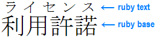

Non-alphabetic
- ! exclamation point (U+0021)component value multiplier
-
An
!after a group indicates that the group is required and must produce at least one value; even if the grammar of the items within the group would otherwise allow the entire contents to be omitted, at least one component value must not be omitted.
2.3. component value multiplier—CSS Values and Units Module Level 3
- " quotation mark (U+0022)
-
- $= [att$=val]attribute selector
-
Represents an element with the att attribute whose value ends with the suffix “val”. If “val” is the empty string then the selector does not represent anything.
- # hash markcomponent value multiplier
-
A
#indicates that the preceding type, word, or group occurs one or more times, separated by comma tokens (which may optionally be surrounded by white space and/or comments). It may optionally be followed by the curly brace forms, above, to indicate precisely how many times the repetition occurs, like#{1,4}.
2.3. component value multiplier—CSS Values and Units Module Level 3
- && double ampersandcomponent value multiplier
-
A
&separates two or more components, all of which must occur, in any order.
2.3. component value multiplier—CSS Values and Units Module Level 3
- ( ) parentheses
-
Property Value Definitions
Some property value definitions also include the slash
/, the comma,, and/or parentheses()as literals. These represent their corresponding tokens. Other non-keyword literal characters that may appear in a component value, such as+, must be written enclosed in single quotes.Function Notation
A functional notation is a type of component value that can represent more complex types or invoke special processing. The syntax starts with the name of the function immediately followed by a left parenthesis
((i.e. a <function-token>) followed by the argument(s) to the notation followed by a right parenthesis). White space is allowed, but optional, immediately inside the parentheses. Functions can take multiple arguments, which are formatted similarly to a CSS property value.
- * asteriskU+002A
-
CSS Comment
Component Value Multiplier
An
*indicates that the preceding type, word, or group occurs zero or more times.Universal Selector
The universal selector, written*, matches the name of any element type. It matches any single element in the document tree.If the universal selector is not the only component of a simple selector, the
*may be omitted. For example:*[lang=fr] and [lang=fr] are equivalent. *.warning and .warning are equivalent. *#myid and #myid are equivalent.
2.3. component value multiplier—CSS Values and Units Module Level 3
/ forward slash
- $= [att*=val]attribute selector
-
Represents an element with the att attribute whose value contains at least one instance of the substring “val”. If “val” is the empty string then the selector does not represent anything.
-
- + disambiguous
-
The term may refer to:
- + additionarithmetic
-
Certain CSS functions, such as the
calc()function allows mathematical expressions with addition (+), subtraction (-), multiplication (*), and division (/) to be used as component values.
- + combinatornext-sibling
-
The next-sibling combinator consists of two compound selectors separated by the “plus sign” (U+002B). The elements represented by the two compound selectors share the same parent in the document tree and the element represented by the first compound selector immediately precedes the element represented by the second one. Non-element nodes (e.g. text between elements) are ignored when considering the adjacency of elements.
math + p
The following selector is conceptually similar to the one in the previous example, except that it adds a class selector; a constraint to the h1 element, that it must have class="opener":
h1.opener + h2
This could also have been expressed in the form of an attribute selector as follows:
h1[class="opener"] + h2
- + component value multiplierCSS Values and Units
-
A
+sign (U+002B) indicates that the preceding type, word, or group occurs one or more times.
2.3. component value multiplier—CSS Values and Units Module Level 3
- + positiveinteger/number
-
A
+sign (U+002B) preceeding an integer or number indicates a positive quantity.
- . periodU+002E
-
See class selector.
- : colonU+003A
-
The colon has the following applications in CSS:
-
E:not(s1, s2)
The syntax of a pseudo-class consists of a ":" (U+003A COLON) followed by the name of the pseudo-class as a CSS identifier.
-
E:not(s1, s2)
- . periodU+002E
-
See class selector.
- / forward slashU+002F (solidus)
-
CSS Comment
- < greater than signcombinator
-
- = equal sign
-
- , commaU+002C
-
The comma has the following applications in CSS:
- E:not(s1, s2)
To separate items in a selector list. For example, an E element that does not match either compound selector s1 or compound selector s2.
- E:not(s1, s2)
- > greater than signcombinator
-
- ? question markcomponent value multiplier
-
A
?indicates that the preceding type, word, or group is optional (occurs zero or one times).
2.3. component value multiplier—CSS Values and Units Module Level 3
- [ ] bracketscomponent value multiplier
-
Brackets
[]are for grouping.
2.3. component value multiplier—CSS Values and Units Module Level 3
- \ backslashU+005C (reverse solidus)
-
Character Escape
In CSS 2.1, a backslash character is used to indicate one of three types of character escape:
- Inside a string, a backslash followed by a newline is ignored (i.e., the string is deemed not to contain either the backslash or the newline). Outside a string, a backslash followed by a newline stands for itself (i.e., a DELIM followed by a newline).
- CSS character escape. Any character (except a hexadecimal digit, linefeed, carriage return, or form feed) can be escaped with a backslash to alter its unescaped interpretation. For example: "\"" is a string consisting of one double quote. Style sheet preprocessors must not remove these backslashes from a style sheet since that would change the style sheet”s meaning.
-
Extended input. Backslash escapes allow authors to refer to characters not easily input by standard means, e.g. a keyboard. In this case, the backslash is followed by at most six hexadecimal digits (0..9A..F), which stand for the ISO 10646 character with that number, which must not be zero. (It is undefined in CSS 2.1 what happens if a style sheet does contain a character with Unicode codepoint zero.) If a character in the range [0-9a-fA-F] follows the hexadecimal number, the end of the number needs to be made clear. There are two ways to do that:
- with a space (or other white space character): "\26 B" ("&B"). In this case, user agents should treat a "CR/LF" pair (U+000D/U+000A) as a single white space character.
- by providing exactly 6 hexadecimal digits: "\000026B" ("&B")
In fact, these two methods may be combined. Only one white space character is ignored after a hexadecimal escape. Note that this means that a "real" space after the escape sequence must be doubled.
If the number is outside the range allowed by Unicode (e.g., "\110000" is above the maximum 10FFFF allowed in current Unicode), the UA may replace the escape with the "replacement character" (U+FFFD). If the character is to be displayed, the UA should show a visible symbol, such as a "missing character" glyph (cf. 15.2, point 5).
Backslash escapes are always considered to be part of an identifier or a string (i.e., "\7B" is not punctuation, even though "{" is, and "\32" is allowed at the start of a class name, even though "2" is not).
Code points in selectors can be escaped with a backslash according to the same escaping rules as CSS.
Inside a CSS comment, a backslash stands for itself, and if a backslash is immediately followed by the end of the style sheet, it also stands for itself (i.e., a DELIM token).
Note that escaping a code point "cancels out" any special meaning it may have in Selectors. For example, the selector:
#foo>
contains a combinator, but:
#foo\>a
instead selects an element with the id:
foo>a
4.1.3 Characters and case—Cascading Style Sheets Level 2 Revision 1
/ forward slash
- 2.1. Escaping—CSS Syntax Module
- Using character escapes in markup and CSS—W3C
- ~= [att^=val]attribute selector
-
Represents an element with the att attribute whose value begins with the prefix “val”. If “val” is the empty string then the selector does not represent anything.
- { } curly bracescomponent value multiplier
-
A comma-separated pair of numbers in curly braces
{A,B}indicates that the preceding type, word, or group occurs at least A and at most B times. The B may be omitted ({A,}) to indicate that there must be at least A repetitions, with no upper bound on the number of repetitions.A single number in curly braces ({A}) indicates that the preceding type, word, or group occurs A times.
A comma-separated pair of numbers in curly braces
{A,B}indicates that the preceding type, word, or group occurs at least A and at most B times. The B may be omitted ({A,}) to indicate that there must be at least A repetitions, with no upper bound on the number of repetitions.
2.3. component value multiplier—CSS Values and Units Module Level 3
- | barvertical line (U+007C)
-
A bar
|separates two or more alternatives: exactly one of them must occur.
- || double bar
-
A
||separates two or more options: one or more of them must occur, in any order.
- combinatorfollowing-sibling
-
The following-sibling combinator is made of the "tilde" (U+007E, ~) code point that separates two compound selectors. The elements represented by the two compound selectors share the same parent in the document tree and the element represented by the first compound selector precedes (not necessarily immediately) the element represented by the second one.
h1 ~ pre
represents a
preelement following anh1. It is a correct and valid, but partial, description of:<h1>Definition of the function a</h1> <p>Function a(x) has to be applied to all figures in the table.</p> <pre>function a(x) = 12x/13.5</pre>
- ~= notation[att~=val]
-
Represents an element with the
attattribute whose value is a whitespace-separated list of words, one of which is exactlyval. Ifvalcontains whitespace, it will never represent anything.a[rel~="copyright"] { ... }The preceeding rule will match all of the following:
- <a ... rel="copyright copyleft copyeditor" ...>...<a>
- <a ... rel="copyleft copyeditor copyright" ...>...</a>
- <a ... rel="copyeditor copyright copyleft" ...>...</a>
- 100 keyword value
-
- 200 keyword value
-
- 300 keyword value
-
- 400 keyword value
-
- 500 keyword value
-
- 600 keyword value
-
- 700 keyword value
-
- 800 keyword value
-
- 900 keyword value
-
A
- above keyword value
-
Setting the
elevationproperty to above is equivalent to setting it to +90eg.The following rules are equivalent:
elevation: below elevation: +90deg
Editor
- absolute keyword value
-
The box's position (and possibly size) is specified with the 'top', 'right', 'bottom', and 'left' properties. These properties specify offsets with respect to the box's containing block. Absolutely positioned boxes are taken out of the normal flow. This means they have no impact on the layout of later siblings. Also, though absolutely positioned boxes have margins, they do not collapse with any other margins.
9.3 Positioning schemes—Cascading Style Sheets Level 2, Revision 2
position property
- top property
- right property
- bottom property
- left property
- absolute positioning
- absolute positioning
-
References to an absolutely positioned element (or its box) imply that the element’s
positionproperty has the value absolute or fixed. An absolutely positioned box:- Is removed from the normal flow entirely.
- Establishes a new containing block for normal flow children and absolutely positioned descendants.
- Its contents do not flow around any other boxes. They may obscure the contents of another box, or be obscured themselves, depending on the stack levels of the overlapping boxes, unless action is taken to prevent it.
Key to understanding absolute positoning is the concept of containing block: the block box that the position and dimensions of the absolutely positioned box are relative to. For the absolutely positioned box, this is the nearest ancester that has its position property set to relative, absolute or fixed. If such an ancestor does not exit, then the containing block defaults to the initial containing block.
.
- align-content propertyCSS Flexible Box Layout Module Level 1
-
Name: align-content Value: flex-start | flex-end | center | space-between | space-around | stretch Initial: stretch Applies to: multi-line flex containers Inherited: no Percentages: n/a Media: visual Computed value: specified value Animatable: no The ‘align-content’ property aligns a flex container’s lines within the flex container when there is extra space in the cross-axis, similar to how
justify-contentaligns individual items within the main-axis. Note, this property has no effect on a single-line flex container.
An illustration of the align-content keywords and their effects on a multi-line flex container.
8.4. Packing Flex Lines: the align-content property—CSS Flexible Box Model Level 1
- align-items propertyCSS Flexible Box Model Level 1
-
Name: align-items Value: flex-start | flex-end | center | baseline | stretch Initial: stretch Applies to: flex containers Inherited: no Percentages: n/a Media: visual Computed value: specified value Animatable: no
- align-self propertyCSS Flexible Box Layout Module Level 1
-
Name: align-self Value: auto | flex-start | flex-end | center | baseline | stretch Initial: auto Applies to: flex items Inherited: no Percentages: n/a Media: visual Computed value: ‘auto’ computes to parent’s align-itemsvalue; otherwise as specifiedAnimatable: no Flex items can be aligned in the cross axis of the current line of the flex container, similar to justify-content but in the perpendicular direction. align-items sets the default alignment for all of the flex container’s items, including anonymous flex items. align-self allows this default alignment to be overridden for individual flex items. (For anonymous flex items, align-self always matches the value of align-items on their associated flex container.)
If either of the flex item’s cross-axis margins are auto, align-self has no effect.
On absolutely positioned elements, a value of auto computes to itself. On all other elements, a value of auto for align-self computes to the value of align-items on the element’s parent, or stretch if the element has no parent.
8.3. Cross-axis Alignment: the align-items and align-self properties—CSS Flexible Box Model Level 1
- all-space-treatment property
-
- always keyword value
-
- ancestor
-
An element A is called an ancestor of an element B, if and only if B is a descendant of A.
3.1 Definitions—Cascading Style Sheets, level 2
- <angle> type
-
Denotes an angular value in the format: <number>, immediately followed by an angle unit identifier.
Angle unit identifiers are:
- deg degrees
- grad grads
- rad radians
Angle values may be negative. They should be normalized to the range 0-360deg by the user agent. For example,
-10degand350degare equivalent.For example, a right angle is
90degor100grador1.570796326794897rad.
- Animations CSS Topic
-
CSS animations make it possible to animate transitions from one CSS style configuration to another. Animations consist of two components, a style describing the CSS animation and a set of keyframes that indicate the start and end states of the animation's style, as well as possible intermediate waypoints.
- anonymous block box visual formatting model
-
For the purpose of making it easier to define formatting, block elements that have a mixed content model with block element children, an anonymous block box is presummed to exist around text nodes.
The following examples illustrates how text is handled when a block element contains only block children:
Example #1
<div> Some text <p> More text </p> </div> Presuming the default display value for
Presuming the default display value fordivandp, the character data, Some text, will be forced to block level and wrapped in an anonymous block box, making all boxes block level.Example #2
<body> <p style='display: inline'> This is anonymous text before the SPAN. <span style='display: block;'> This is the content of SPAN. </span> This is anonymous text after the SPAN. </p> </body>When an inline box contains an in-flow block-level box, the inline box (and its inline ancestors within the same line box) are broken around the block-level box (and any block-level siblings that are consecutive or separated only by collapsible whitespace and/or out-of-flow elements), splitting the inline box into two boxes (even if either side is empty), one on each side of the block-level box(es). The line boxes before the break and after the break are enclosed in anonymous block boxes, and the block-level box becomes a sibling of those anonymous boxes. When such an inline box is affected by relative positioning, any resulting translation also affects the block-level box contained in the inline box.
- anonymous inline box visual formatting model
-
Any text that is directly contained inside a block container element (not inside an inline element) must be treated as an anonymous inline element.
Example
In a document with HTML markup like this:
<p>Some <em>emphasized</em> text</p>
the
<p>generates a block box, with several inline boxes inside it. The box for "emphasized" is an inline box generated by an inline element<em>, but the other boxes ("Some" and "text") are inline boxes generated by a block-level element<p>. The latter are called anonymous inline boxes, because they do not have an associated inline-level element.Such anonymous inline boxes inherit inheritable properties from their block parent box. Non-inherited properties have their initial value. In the example, the color of the anonymous inline boxes is inherited from the P, but the background is transparent.
White space content that would subsequently be collapsed away according to the 'white-space' property does not generate any anonymous inline boxes.
- anonymous box visual formatting model
-
An anonymous box, informally, is a box that cannot be addressed with CSS selectors. All its properties, except for
display, have their default values (either the initial value or inherited). Anonymous boxes are created when the CSS box model requires a child box with a certain value fordisplay, but the child actually has a different value. In that case an anonymous box of the right kind is created and wraps the child (or children). Other modules (e.g., [CSS3TBL], [CSS3TEXT]) may also define anonymous boxes. The anonymous boxes defined by this module are the following:-
A block-level box may contain either line boxes or block-level boxes, but not both. If necessary, any line boxes that belong to this box’s element are wrapped in one or more (as few as possible) anonymous boxes with a
displayof block. -
The containing block of the root element’s top-level boxes is a rectangle with the dimensions of the viewport, anchored at the canvas’s origin for continuous media and the page area for paged media. This containing block is called the initial containing block. The
directionandblock-progressionof the initial containing block are the same as those of the root element. -
The containing block of other boxes is the rectangle formed by the content edge of their nearest ancestor box that is block-level. This may be an anonymous box. The
directionandblock-progressionof the containing block are those of the box whose content edge it is.
The above is modified by the Absolute Positioning module [CSS3POS]: in particular, if a box's position property is neither static nor relative, its containing block is established differently.
-
A block-level box may contain either line boxes or block-level boxes, but not both. If necessary, any line boxes that belong to this box’s element are wrapped in one or more (as few as possible) anonymous boxes with a
- at-keyword
-
@charset|@document|@font-face|@import|@keyframes|@keyframes|@media|@namespace|@page|@supports|@viewportAt-rules start with an at-keyword, which is an identifier with an '@' at the start (for example: '@import', '@page'). An identifier consists of letters, digits, dashes and escaped characters.
- <at-keyword-token>
-
The <at-keyword-token> has a value composed of zero or more code points. The type flag defaults to "unrestricted" if not otherwise set.
At the "top level" of a stylesheet, an <at-keyword-token> starts an at-rule. Anything else starts a qualified rule, and is included
Once an at-rule starts, nothing is invalid from the parser’s standpoint; it’s all part of the at-rule’s prelude. Encountering a
ends the at-rule immediately, while encountering an opening curly-brace <{-token> starts the at-rule’s body. The at-rule seeks forward, matching blocks (content surrounded by (), {}, or []) until it finds a closing curly-brace <}-token> that isn’t matched by anything else or inside of another block. The contents of the at-rule are then interpreted according to the at-rule’s own grammar.
4. Tokenization—CSS Syntax Module Level 3 https://www.w3.org/TR/css-syntax-3/#typedef-at-keyword-token
- armenian keyword value
-
- aspect
-
Each element may have any of the following five aspects, which can be selected against, all of which are matched as strings:
- The element’s type (also known as its tag name).
- The element’s namespace.
- An ID.
- Classes (named groups) to which it belongs.
- Attributes, which are name-value pairs.
- aspect value
-
The ratio of a font’s
font-sizeto its x-height.
- at-rule
-
An @-rule is an instruction or directive to the CSS parser. @-rules extend CSS rule set syntax beyond simple selector/declaration blocks. Any functionality in CSS that does not fall under the umbrella of selector/declaration pair bindings (style rule), uses a special @-rule syntax. CSS @-rules are a way to define style properties for when an application's page renders in a particular environment such as, for example, a browser, platform, locale or device.
An at-rule consists of everything up to and including the next semicolon (;) or the next block, whichever comes first.
- CSS Syntax Module Level 3—20 February 2014
- CSS 2.1 Specification— 07 June 2011
- At-rule—MDN
- At-rules—sitepoint
- CSS At-rules—
- At-Rules: @import, @media, and @font-face—htmldog
- At-Rules—blooberry
- At @ Rule CSS—css-tricks
- 2. Description of CSSs Syntax—
- CSS at-rules—CSS Syntax Module Level 3
- 10 Working with At-Rules—oracle
- Feature Testing CSS At-Rules—Ryan Morr
- dottoro
- atomic inline-level box
-
An atomic inline-level box is a single opaque box that participates in an inline formatting context. For example, atomic inline-level boxes are generated by replaced inline-level elements, inline-block elements, and inline-table elements.
Atomic inline-level boxes are not inline boxes.
- attr() function
-
- attribute
-
A value associated with an element, consisting of a name, and an associated (textual) value.
- attribute selector
-
Attribute selectors represent attribute values in the document tree.
CSS2 introduced four attribute selectors:
- [att]
Represents an element with the att attribute, whatever the value of the attribute.
- [att=val]
Represents an element with the att attribute whose value is exactly “val”.
- [att~=val]
Represents an element with the att attribute whose value is a whitespace-separated list of words, one of which is exactly “val”. If “val” contains whitespace, it will never represent anything (since the words are separated by spaces). Also if “val” is the empty string, it will never represent anything.
- [att|=val]
Represents an element with the att attribute, its value either being exactly “val” or beginning with “val” immediately followed by "-" (U+002D). This is primarily intended to allow language subcode matches (e.g., the hreflang attribute on the a element in HTML) as described in BCP 47 ([BCP47]) or its successor. For lang (or xml:lang) language subcode matching, please see the :lang pseudo-class.
Three additional attribute selectors are provided for matching substrings in the value of an attribute:
- [att^=val]
Represents an element with the att attribute whose value begins with the prefix “val”. If “val” is the empty string then the selector does not represent anything.
- [att$=val]
Represents an element with the att attribute whose value ends with the suffix “val”. If “val” is the empty string then the selector does not represent anything.
- [att*=val]
Represents an element with the att attribute whose value contains at least one instance of the substring “val”. If “val” is the empty string then the selector does not represent anything.
Attribute values must be <ident-token>s or <string-token>s. [CSS3SYN]
In some document formats, default attribute values can be defined in a DTD or elsewhere, but these can only be selected by attribute selectors if they appear in the document tree. Selectors should be designed so that they work whether or not the default values are included in the document tree.
An attribute selector with an attribute name containing a namespace prefix that has not been previously declared is an invalid selector. See: 6.4. Attribute selectors and namespaces—Selectors Level 4
6.5. Default attribute values in DTDs—Selectors Level 4
6. Attribute selectors—Selectors Level 4
- The Skinny on CSS Attribute Selectors—CSS Tricks
- Attribute Selector (CSS Selector)—SitePoint
- Attribute selectors—MDN
- [att]
- aural style sheet
-
Aural style sheets use a combination of speech synthesis and sound effects to broadcast auditory information.
Aural presentation can be used:
- by blind people
- to help users learning to read
- to help users who have reading problems
- for home entertainment
- in the car
- by print-impaired communities
The aural presentation converts the document to plain text and feed this to a screen reader (a program that reads all the characters on the screen)
-
An author is a person who writes documents and associated style sheets. An authoring tool generates documents and associated style sheets.
3.1 Definitions—Cascading Style Sheets, level 2
- auto keyword value
-
- avoid keyword value
-
- azimuth propertyCascading Style Sheets Level 2
-
Value: globals | download | href | hreflang | ping | referrerpolicy | rel | target | type | Initial: center Applies to: all elements Inherited: yes Percentages: N/A Media: aural Computed value: normalized angle Before its inclusion in CSS2, this property was first proposed in the W3C Working Draft "Aural Cascading Style Sheets (ACSS)" (1/7/97, http://www.w3.org/Style/CSS/Speech/NOTE-ACSS).
The azimuth property allows you to specify the horizontal position of aural information, either as an angle, or a keyword. This is the radial position of the voice in the horizontal plane.
In combination with elevation, azimuth enables different audio sources to be positioned spatially for aural presentation. This is important in that it provides a natural way to tell several voices apart, as each can be positioned to originate at a different location on the sound stage. Stereo output produce a lateral sound stage, while binaural headphones and multi-speaker setups allow for a fully three-dimensional stage.
In an optimal listening environment, the sound stage is considered to be parallel to the floor, with origin point at the listeners head. The ideal listening position is considered to be perfectly facing the main sound reproduction source(s) at an optimal distance. This property describes the radial position (360 degree measure) on this listening plane. An imaginary axis can be drawn straight ahead of the listener with the imaginary line serving as the origin. Rightward angle measures are positive and leftward, negative.
‘azimuth’—CSS 2.1 Specification
B
- background-attachment propertyintroduced: CSS Level 1
-
‘background-attachment’—CSS 2.1 Specification
- background-color propertyintroduced: CSS Level 1
-
‘background-color’—CSS 2.1 Specification
- background-image propertyintroduced: CSS Level 1
-
‘background-image’—CSS 2.1 Specification
- background-position propertyintroduced: CSS Level 1
-
‘background-position’—CSS 2.1 Specification
- background-repeat propertyintroduced: CSS Level 1
-
‘background-repeat’—CSS 2.1 Specification
- background propertyintroduced: CSS Level 1
-
‘background’—CSS 2.1 Specification
- Backgrounds and Borders CSS Topic
-
CSS background properties allow an author to define what paints underneath the element. Element boxes can have padding around the element's content and a border. The border marks the outer edge of the padding area. Historically, border properties can define the width, style and color of the border. In the most recent draft this model has been extended to include images.
- <bad-string-token>
-
4. Tokenization—CSS Syntax Module Level 3
- <bad-url-token>
-
4. Tokenization—CSS Syntax Module Level 3
- baseline keyword value
-
The baseline is an invisible line onto which all type characters sit. It is from the baseline that descenders, such as ‘j’, ‘p’, ‘g’ and ‘y’ hang.
Align the baseline of the box with the baseline of the parent box. If the box does not have a baseline, align the bottom margin edge with the parent's baseline
- CSS Baseline: The Good, The Bad And The Ugly—Smashing Magazine
- One Weird Trick to Baseline-Align Text—Adobe
- Improve your web typography with baseline shift—Stuff & Nonsense
- basic box model
-
The basic box module describes the basic types of boxes, with their padding and margin, and the normal ‘flow’ (i.e., the sequence of blocks of text with margins in-between). It also defines ‘floating’ boxes.
The basic box model is the original model defined in CSS. The short comings of this model were addressed in CSS Flexible Box Model Level 1. See Flexbox.
Boxes may contain either horizontal or vertical lines of text, and boxes of different orientations may be mixed in one flow. This is a level 3 feature.
The basic box model actually relies on a series of four boxes” each of which is placed inside the next.

Each region or box has a specific purpose. For example, the margin serves to separate the entire boxed region from other boxed regions on the page. Of course, you can set the margin to zero so that there’s no separation, but you can provide as much separation as needed to obtain the desired appearance.
Borders serve to provide visual separators between items of content. They are used all the time on web pages. Each side of a border can be controlled separately. You may choose to display only the right border and not the top, bottom, or left when working on the left pane of a page. The border would end up looking like a line instead of a box.
Padding separates the border from the content, when the border is displayed. Otherwise, the border and content would appear directly next to each other and the content would appear cramped in some cases. This would be a serious problem when you’re working with text. On the other hand, you may actually want the border directly next to an image to highlight the image and set it off on a page.
The result of all these regions is that you end up with a content area that’s somewhat smaller than the box as a whole unless you eliminate the margin, border, and padding. The content is nestled securely in its box and presents information to the user in a form that’s both usable and aesthetically pleasing.
- basic data type
-
In the specification, a value may be represented in the grammar by a non-terminal; a basic data type that represents a collection of value keywords. A basic data type consists of an identifier inside angle brackets. It is used in the specification as a placedholder for a keyword value. For example, the border property may specify a width, style, and a color.
<angle>|<border-style>|<border-width>|<bottom>|<color>|<counter>|<family-name>|<frequency>|<generic-family>|<generic-voice>|<identifier>|<integer>|<left>|<length>|<margin-width>|<number>|<padding-width>|<percentage>|<relative-size>|<shape>|<specific-voice>|<string>|<time>|<uri>
- Basic User Interface technical report
-
Basic User Interface refers to a series of CSS documents that describe borders and backgrounds, including borders consisting of images and backgrounds with multiple images.
The chain of technical reports from most recent to the past are:
CSS Basic User Interface Module Level 3 2015-07-07 CR CSS Basic User Interface Module Level 3 2015-05-19 WD CSS Basic User Interface Module Level 3 2015-04-09 WD CSS Basic User Interface Module Level 3 2015-03-10 WD Basic User Interface Module Level 3 2015-02-24 WD CSS Basic User Interface Module Level 3 2012-01-17 WD CSS3 Basic User Interface Module 2004-05-11 WD CSS3 Basic User Interface Module 2003-07-03 WD CSS3 module: Basic User Interface 2002-08-02 WD
- behind keyword value
-
Setting the
azimuthproperty to behind is equivalent to setting it to 180deg or -180deg.The following rules are equivalent:
azimuth: behind azimuth: 180deg azimuth: -180deg
'azimuth'—CSS 2.1 Specification
‘azimuth’—CSS 2.1 Specification
- below keyword value
-
Setting the
elevationproperty to below is equivalent to setting it to -90deg.The following rules are equivalent:
elevation: below elevation: -90deg
Editor
‘elevation’—CSS 2.1 Specification
- bidi-override keyword value
-
- binaural
-
Of or relating to sound recorded using two microphones and usually transmitted separately to the two ears of the listener.
Human hearing is binaural.
- blink keyword value
-
- block disambiguous
-
The term may refer to:
- declaration block
- block—value
- block—visual formatting model
- block-level box—visual formatting model
- block container box—visual formatting model
- block box—visual formatting model
- block keyword value
-
- block visual formatting model
-
In the Visual Formatting Model, The three terms block-level box, block container box, and block box are sometimes abbreviated as block where unambiguous.
- block box
-
Boxes that are also block containers are called block boxes.
- block container visual formatting model
-
See block container box.
- block container box visual formatting model
-
A block container box is either a block-level box, non-replaced inline block, or non-replaced table cell that contains only block-level boxes or establishes an inline formatting context and thus contains only inline-level boxes.
Block-level boxes that are also block containers are called block boxes.
In the Visual Formatting Model, The three terms block-level box, block container box, and block box are sometimes abbreviated as block where unambiguous.
- block container element
-
See block container box.
- block formatting context visual formatting model
-
In a block formatting context:
- Boxes are laid out one after the other, vertically, beginning at the top of a containing block.
- The vertical distance between two sibling boxes is determined by the 'margin' properties.
- Vertical margins between adjacent block boxes in a block formatting context collapse.
- Each box's left outer edge touches the left edge of the containing block (for right-to-left formatting, right edges touch). This is true even in the presence of floats (although a box's content area may shrink due to the floats).
Floats, absolutely positioned elements, block containers that are not block boxes, and block boxes with 'overflow' other than 'visible' (except when that value has been propagated to the viewport) establish new block formatting contexts for their contents.
- block-level visual formatting model
-
In general, block-level refers to the vertical layout of elements or content. Block-level may also refer to: block-level element, and block-level box.
- block-level box visual formatting model
-
A block-level box is a box that has a used value for
display; of ‘block’, ‘list-item’ or ‘table’, ‘table-*’ (i.e., all table boxes). Except for table boxes and replaced elements, a block-level box is also a block container box.Block-level boxes are boxes that participate in a block formatting context. Each block-level element generates a principal block-level box that may contain descendant boxes and generated content and is also the box involved in any positioning schemes. Some block-level elements may generate additional boxes in addition to the principal box: 'list-item' elements. These additional boxes are placed with respect to the principal box.
In the Visual Formatting Model, The three terms block-level box, block container box, and block box are sometimes abbreviated as block where unambiguous.
A block-level box may contain either line boxes or block-level boxes, but not both. If necessary, any line boxes that belong to this box's element are wrapped in one or more (as few as possible) anonymous boxes with a ‘display’ of ‘block’.
An example of the last point above is this document fragment:
<p> Somebody whose name I have forgotten, said, long ago: <q>a box is a box,</q> and he probably meant it. </p>
- block-level element visual formatting model
-
Block-level elements are those elements of the source document that are formatted visually as blocks (e.g., paragraphs).
Each block-level element generates a principal block-level box that contains descendant boxes and generated content and is also the box involved in any positioning scheme. Some block-level elements may generate additional boxes in addition to the principal box: 'list-item' elements. These additional boxes are placed with respect to the principal box.
The following values of the display property make an element block-level: 'block', 'list-item', and 'table'.
- block-progression property (deprecated)CSS Level 2 Revision 1
-
Value: tb | rl | lr Initial: tb Applies to: all elements and generated content Inherited: yes Percentages: N/A Media: Visual Computed value: specified value (except for initial and inherit) The block-progression property determines whether the flow orientation for blocks is horizontal or vertical. For example, Latin scripts are typically written with a left to right inline-progression and a top to bottom block-progression.
This property has been deprecated in favor of the
writing-modeproperty [CSS3-WRITING-MODES]. Thedirectionandblock-progressionproperty values have been subsumed into thehorizontal-tb,vertical-lr, andvertical-rlkeyword values.
- bold keyword value
-
- bolder keyword value
-
- border-bottom propertyintroduced: CSS Level 1
-
‘border-top’—CSS 2.1 Specification
- border-bottom-width propertyintroduced: CSS Level 1
-
‘border-top’—CSS 2.1 Specification
- border-collapse propertyCSS Level 2 Revision 1
-
‘border-collapse’—CSS 2.1 Specification
- border-color propertyintroduced: CSS Level 1
-
‘border-color’—CSS 2.1 Specification
- border-left propertyintroduced: CSS Level 1
-
‘border-top’—CSS 2.1 Specification
- border-left-width propertyintroduced: CSS Level 1
-
‘border-top-width’—CSS 2.1 Specification
- border-right propertyintroduced: CSS Level 1
-
‘border-top’—CSS 2.1 Specification
- border-right-width propertyintroduced: CSS Level 1
-
‘border-top-width’—CSS 2.1 Specification
- border-spacing propertyCSS Level 2 Revision 1
-
‘border-spacing’—CSS 2.1 Specification
- border-style propertyintroduced: CSS Level 1
-
‘border-style’—CSS 2.1 Specification
- <border-style> type
-
- border-top propertyintroduced: CSS Level 1
-
‘border-top’—CSS 2.1 Specification
- border-top-color propertyCSS Level 2 Revision 1
-
‘border-top-color’—CSS 2.1 Specification
- border-top-style propertyCSS Level 2 Revision 1
-
‘border-top-style’—CSS 2.1 Specification
- border-top-width propertyCSS Level 2 Revision 1
-
‘border-top-width’—CSS 2.1 Specification
- border-width propertyCSS Level 2 Revision 1
-
‘border-width’—CSS 2.1 Specification
- <border-width> type
-
- border propertyintroduced: CSS Level 1
-
‘border’—CSS 2.1 Specification
- both keyword value
-
- bottom propertyCascading Style Sheets Level 2
-
Name: bottom Value: <length> | <percentage> | auto | inherit Initial: auto Applies to: positioned elements Inherited: no Percentages: refer to width of containing block Media: visual Computed value: if specified as a length, the corresponding absolute length; if specified as a percentage, the specified value; otherwise, 'auto'. The bottom property specifies for elements with
positionset to relative, absolute or fixed, the offset of the bottom margin edge of the positioned box, above the bottom edge of the box's containing block. For relatively positioned boxes, the offset is with respect to the bottom edge of the box itself. For fixed elements the offset is calculated with respect to the bottom edge of the viewport.
- bottom keyword value
-
See
‘bottom’—CSS 2.1 Specification
- <bottom> type
-
- box
-
A block-level box, an inline-level box or a line box.
CSS1 is based on a simple box-oriented formatting model where each formatted element results in one or more rectangular boxes. All boxes have a core content area with optional surrounding padding, border and margin areas.
CSS assumes that the document to lay out is modeled as a tree of elements. Each element has an ordered list of zero or more child elements, with an optional string of text before the list, in-between the children and after the list. The unique element that has no parent is called the root element.
CSS describes how each element and each string of text is laid out by transforming the document tree into a tree of rectangular boxes, whose size and position depends on their properties.
The tree of boxes closely mirrors the tree of elements. Each element is transformed into zero or more boxes. If the element is not the root element, then each of its boxes is either a child of a box of the parent element, or it is a child of a box of the element itself. In other words, there may be more or fewer boxes than there are elements, but each box belongs to exactly one element.
Elements that have a 'display' value of 'none' are not formatted and will therefore not result in a box.
The types of boxes that may be generated in CSS are specified by the
displayproperty.The model specified in the CSS basic box model differs from the model described in the CSS level 2.1, because (1) it is generalized to apply also to vertical text and (2) it adds properties to control the marquee effect, (speed, direction, etc.). The marquee effect is allowed, but UA-dependent in level 2.
For example, a fragment of HTML such as
<ul>; <li>;The first item in the list. <li>;The second item. </ul>;
may result in one block level box for the
ulelement, containing two block-level boxes for the twolielements, each of which has one line box (i.e., one line of text). Each line box contains two inline-boxes: one that contains the list bullet and one that contains the text.Note how the
liis transformed into multiple boxes, including one that contains generated content, viz., the list bullet.If the document gets rendered in a narrow window, it may be that the
lielements get transformed into even more boxes, because each line of text requires multiple lines. And if the document is rendered on paper, it may be that a page break false in the middle of theulelement, so that it is not transformed into a single block-level box, but into two smaller ones, each on a different page.
- Box Alignment CSS Topic
-
Excludng alignment of text (CSS3TEXT) and inline-level (CSS3LINE]) content, Box Alignment attempts to create a cohesive and common box alignment model to share among all of CSS. It contains the features of CSS relating to the alignment of boxes within their containers in the various CSS box layout models: block layout, table layout, flex layout, and grid layout. It extends the block layout model described in CSS 2.1, chapters 9 and 10 to define the interaction of these properties with the alignment of table cell content using
vertical-align.CSS Levels 1 and 2 allowed for the alignment of text via
text-alignand the alignment of blocks by balancing auto margins. However, except in table cells, vertical alignment was not possible.Properties
align-content,align-items,align-self,justify-content,justify-items,justify-self
- box model
-
The CSS box model describes the rectangular boxes that are generated for elements in the document tree and laid out according to the visual formatting model.

In CSS2.1, block-level elements can only be rectangular. The final dimensions of a block-level element is calculated based on the
widthandheightof the content area, as well as any margins, padding, and borders that are applied to the element.The content area of an element can be defined by declaring its
widthandheightproperties. If no declarations are applied, the default value for thewidthandheightproperties is auto.Positioning Width Computed Width static autowidth of containing block minus any horizontal margins, borders, padding, and scrollbars.
-
C
- calc() function
-
- canvas
-
See viewport.
- capitalize keyword value
-
- caption keyword value
-
- caption-side propertyCSS Level 2 Revision 1
-
‘caption-side’—CSS 2.1 Specification
- cascading introduced: CSS Level 1
-
One of the fundamental design principles of CSS is cascading, which allows several style sheets to influence the presentation of a document. When different declarations try to set a value for the same element/property combination, the conflicts must somehow be resolved.
- Cascading and Inheritance CSS Topic
-
CSS Cascading and Inheritance Level 3 defines the rules for finding the value for all properties on all elements in a document. Cascading resolves potential conflicts that arise when several style sheets set a value for the same element/property combination. However, in the absence of a declaration to set a value for an element/property combination a default value is found by way of inheritance or by looking at the property’s initial value.
- Cascading Style Sheets CSS
-
CSS is a simple, declarative language for creating style sheets that specify the rendering of structured documents (such as HTML and XML) on screen, on paper, in speech, etc.
CSS assumes that the document to lay out is modeled as a tree of elements. Each element has an ordered list of zero or more child elements, with an optional string of text before the list, in-between the children and after the list. The unique element that has no parent is called the root element.
CSS describes how each element and each string of text is laid out by transforming the document tree into a tree of rectangular boxes (see box), whose size and position depends on their properties.
Definition
The definition of CSS is split across a bewildering maze of over 100 technical reports, occasionally dealing with some very obscure topics. Knowing what is still relevant and where to find it is a challenge that only receeds with lengthy study. There is no standard naming convention to help in these matters either. Names change during the W3C Recommendation Track process and appear to be made up, seemingly at random. Even the level changes are sometines inconsistent, sometimes moving from higher to lower numbers.
In the beginning, CSS was described in terms of levels and revisions. Technical reports were monolithic. Then is 2007 the decision was made to split the various pieces of the definition out into their own modules and develop them independent of the other pieces. However level references were continued in some but not all document names.
Given that the raison d’être for CSS is layout, it should not suprise that CSS has developed multiple approaches to this topic (see layout).
The most consistent naming of late can be found at the Candiate Recommendation CR or Recommendation REC stage. The document names begin with CSS, the topic, and then end with a level identifier, sometimes preceded by "module". The following table exposes the major topics and their most recent definition:
Topic Symantics Latest Version Animations CSS animations make it possible to animate transitions from one CSS style configuration to another. Animations consist of two components, a style describing the CSS animation and a set of keyframes that indicate the start and end states of the animation's style, as well as possible intermediate waypoints. CSS Animations Backgrounds and Borders CSS background properties allow an author to define what paints underneath the element. Element boxes can have padding around the element's content and a border. The border marks the outer edge of the padding area. Historically, border properties can define the width, style and color of the border. In the most recent draft this model has been extended to include images. CSS Backgrounds and Borders Module Level 4 Box Model Box Model defines how a tree of elements in a structured document, e.g., HTML and XML, is transformed into a tree of boxes to be presented in a layout. CSS basic box model Box Alignment Excludng alignment of text (CSS3TEXT) and inline-level (CSS3LINE]) content, Box Alignment attempts to create a cohesive and common box alignment model to share among all of CSS. It contains the features of CSS relating to the alignment of boxes within their containers in the various CSS box layout models: block layout, table layout, flex layout, and grid layout. It extends the block layout model described in CSS 2.1, chapters 9 and 10, to define the interaction of these properties with the alignment of table cell content using vertical-align.CSS Box Alignment Module Level 3 Cascading and Inheritance Cascading and Inheritance defines the rules for finding the value for all properties on all elements in a document. Cascading resolves potential conflicts that arise when several style sheets set a value for the same element/property combination. However, in the absence of a declaration to set a value for an element/property combination a default value is found by way of inheritance or by looking at the property’s initial value. CSS Cascading and Inheritance Level 4 Color Color describes color values and properties for foreground color and group opacity. These include properties and values from CSS level 2, and the opacityproperty added in CSS Level 3.CSS Color Module Level 3 Compositing and Blending Compositing describes how shapes of different elements are combined into a single image. Early versions of CSS used Simple Alpha Compositing. This has been expanded so that each element is rendered into its own buffer and is then merged with its backdrop using the Porter Duff source-over operator. Blending is the aspect of compositing that calculates the mixing of colors where the source element and backdrop overlap. Compositing and Blending Level 1 Conditional Rules CSS Conditional Rules is a CSS module that allows to define a set of rules that will only apply based on the capabilities of the processor or the document the style sheet is being applied to. Counters Device Adaptation Display property Encodings Exclusions Filter Effects Flexbox Font Loading Font properties Fragmentation Generated and Replaced Content Geometric Interfaces Grid layout Inline layout Line Grid Masking Media Queries Media Queries Level 4 Motion Path Namespaces Overflow Paged Media Page Floats Pseudo-Elements Round Display Ruby Scoping Selectors Shapes Sizing Speech SVG Integrations Syntax Tables Template layout Text Text decorations Text Effects Transform Transitions User Interface Values and Units Variables Will Change Writing Modes Technical Reports
The following table lists all documents found by this editor to exist on the internet, regardless of their maturity level. It includes both superceeded and obsolete documents. The abstract section leads with a reference to more relevant definitions when applicable.
Title Date Status Abstract A MathML for CSS Profile 2011-06-07 REC This document describes a profile of MathML 3.0 that admits formatting with Cascading Style Sheets. Associating Style Sheets with XML documents 1.0, 2ed 2010-10-28 REC This document allows style sheets to be associated with an XML document by including one or more processing instructions with a target of xml-stylesheet in the document's prolog. Aural Cascading Style Sheets (ACSS) Specification 1999-09-02 WD Obsolete (see CSS Speech Module). This document describes style sheet properties for rendering Web documents as synthesized speech. It is superceded by CSS Level 2. Behavioral Extensions to CSS 2014-10-14 WGN Obsolete. Behavioral Extensions provide a way to link to binding technologies, such as XBL, from CSS style sheets. Compositing and Blending Level 1 2015-01-13 CR Compositing describes how shapes of different elements are combined into a single image by overlaying, masking, blending, etc. This module also defines a syntax for using compositing in CSS. CSS 2D Transforms 2011-12-15 WD This document is now know as: CSS Transforms Module Level 1. CSS 2D Transforms allows elements rendered by CSS to be transformed in two-dimensional space. CSS3 Advanced Layout Module 2005-12-15 WD This document is superceeded by the CSS Template Layout Module CSS3 Backgrounds and Borders Module 2005-02-16 WD This draft is now known as: CSS Backgrounds and Borders Module Level 3. It contains the proposed functionality for CSS level 3 to describe borders and backgrounds, including borders consisting of images and backgrounds with multiple images. CSS3 Basic User Interface Module 2004-05-11 CR This draft has been superceeded by “CSS Basic User Interface Module Level 3”. It contains the proposed functionality for CSS level 3 to describe borders and backgrounds, including borders consisting of images and backgrounds with multiple images. This module replaces two earlier drafts: CSS3 module: Backgrounds and CSS3 module: Border. CSS3 Generated and Replaced Content Module 2003-05-14 WD This CSS3 Module describes how to insert and move content around a document, in order to create footnotes, endnotes, section notes. Inserted content can also introduce counters and strings, which can be used for running headers and footers, section numbering, and lists. Finally, techniques for declaring replaced images, as well as scaling and cropping them using CSS, are described. CSS3 Hyperlink Presentation Module 2014-10-14 WGN Obsolete. This document has been retired. CSS3 introduction 2000-04-14 WD This document is now know as CSS Snapshot 2015. It lists all the modules to be contained in the future CSS3 specification. This document has been superceeded by CSS3 Introduction and CSS_Snapshot_2015. CSS3 module: Backgrounds 2002-08-02 WD This draft has been superceeded by CSS Backgrounds and Borders Module Level 3. It describes the functionality that is proposed for CSS level 3 to describe backgrounds, such as background colors and background images. It includes and extends the functionality of CSS level 2. CSS3 module: Basic User Interface 2002-08-02 WD This working draft was previously titled: CSS Basic User Interface Module Level 3, and has been superceeded by CSS Basic User Interface Module Level 3. It contains: 1) Pseudo-classes and pseudo-elements to style user interface states and element fragments respectively. 2) Additions to the user interface features in CSS2. 3) The ability to style the appearance of various standard form elements in HTML4 and properties to augment or replace some remaining stylistic attributes in HTML4. 4) Directional focus navigation properties. 5) A mechanism to allow the styling of elements as icons for accessibility. CSS3 module: Border 2002-11-07 WD This draft has been superceeded by CSS Backgrounds and Borders Module Level 3. It contains the features of CSS level 3 relating to borders and backgrounds. The main extensions compared to level 2 are borders consisting of images, boxes with multiple backgrounds, boxes with rounded corners and boxes with shadows. CSS3 module: Cascading and inheritance 2015-04-16 WD This draft has been superceeded by CSS Cascading and Inheritance Level 3. CSS3 module: line 2002-05-15 WD This draft has been superceeded by CSS Inline Layout Module Level 3. It describes the positioning in the block progression direction both of elements and text within lines and of the lines themselves. This positioning is often relative to a baseline. It also describes special features for formatting of first lines and drop caps. CSS3 module: text 2003-02-26 WD This document, formerly called, International Layout, has been superceeded by CSS Text Module Level 3. It presents a set of text formatting properties for CSS3. Many of these properties already existed in Cascading Style Sheets, level 2. Many of the new properties have been added to address basic requirements in international text layout, particularly for East Asian and bidirectional text. CSS3 module: The box module 2002-10-24 WD This module has been superceeded by CSS basic box model. It describes the characteristics of the flow and of the various kinds of boxes, excluding tables, “absolute“ and “fixed“ positioning, rules for partitioning a flow into pages, and the special boxes for ruby annotations and multicolumn layouts. CSS3 module: Values and Units 2001-07-13 WD This draft has been superceeded by CSS Values and Units Module Level 3. It describes the various values and units that CSS properties accept. Also, it describes how "specified values", which is what a style sheet contains, are processed into "computed values" and "actual values". CSS3 module: W3C selectors 2001-01-26 WD This draft has been superceeded by Selectors Level 3. To bind style properties to elements in the document, CSS uses selectors, which are patterns that match to elements. This draft describes the selectors that are proposed for CSS level 3. It includes and extends the selectors of CSS level 2. CSS module: Syntax 2003-08-13 WD This draft has been superceeded by CSS Syntax Module Level 3. It describes the basic structure of CSS style sheets, some of the details of the syntax, and the rules for parsing CSS style sheets. It also describes (in some cases, informatively) how stylesheets can be linked to documents and how those links can be media-dependent. CSS3 Paged Media Module 2013-03-14 WD This module describes the page model that partitions a flow into pages. It builds on the Box model module and introduces and defines the page model and paged media. It adds functionality for pagination, page margins, page size and orientation, headers and footers, widows and orphans, and image orientation. Finally it extends generated content to enable page numbering and running headers / footers. CSS3 Ruby Module 2011-06-30 WD This draft has been superceeded by CSS Ruby Layout Module Level 1. Ruby Layout Module Level 1. “Ruby” are short runs of text alongside the base text, typically used in East Asian documents to indicate pronunciation or to provide a short annotation. This document proposes a set of CSS properties associated with the 'Ruby' elements. They can be used in combination with the Ruby elements of HTML. CSS3 Text Module 2003-05-14 CR This document, formerly called CSS3 module: text, presents a set of text formatting properties for CSS3. Many of these properties already existed in Cascading Style Sheets, level 2. Many of the new properties have been added to address basic requirements in international text layout, particularly for East Asian and bidirectional text. CSS3 Text Effects Module 2005-06-27 WD This draft, formerly called CSS3 Text Module, has been superceeded by CSS Text Module Level 3. This CSS3 module defines properties for text manipulation and specifies their processing model. It covers line breaking, justification and alignment, white space handling, text decoration and text transformation. CSS3 Text Module 2003-05-14 CR This document has been superceeded by CSS Text Module Level 3. It presents a set of text formatting properties for CSS3 to address basic requirements in international text layout, particularly for East Asian and bidirectional text. CSS3 Text Module Level 3 2003-10-10 LC This draft has been superceeded by CSS Text Module Level 3. It defines properties for text manipulation and specifies their processing model. It covers line breaking, justification and alignment, white space handling, and text transformation. CSS 3D Transforms Module Level 3 2009-03-20 WD This draft is superceeded by CSS Transforms Module Level 1. It extends CSS Transforms to allow elements rendered by CSS to be transformed in three-dimensional space CSS Animations 2013-02-19 WD CSS Animations allow an author to modify CSS property values over time. CSS Backgrounds and Borders Module Level 3 2014-09-09 CR This module contains the features of CSS level 3 relating to borders and backgrounds. The main extensions compared to level 2.1 are borders consisting of images, boxes with multiple backgrounds, boxes with rounded corners and boxes with shadows. This module replaces three earlier drafts: CSS3 module: Backgrounds, CSS3 module: Backgrounds and CSS3 module: Border. CSS Backgrounds and Borders Module Level 4 2014-09-09 CR This module contains the features of CSS level 3 relating to borders and backgrounds. The main extensions compared to level 2.1 are borders consisting of images, boxes with multiple backgrounds, boxes with rounded corners and boxes with shadows. This module replaces three earlier drafts: CSS3 module: Backgrounds, CSS3 module: Backgrounds and CSS3 module: Border. CSS basic box model 2007-08-09 WD This module describes the basic types of boxes, with their padding and margin, and the normal “flow” (i.e., the sequence of blocks of text with margins in-between). Boxes may contain either horizontal or vertical lines of text. It also defines “floating” boxes, but other kinds of layout, such as tables, absolute positioning, ruby annotations, grid layouts, columns and numbered pages, are described by other modules. Also, the layout of text inside each line (including the handling of left-to-right and right-to-left scripts) is defined elsewhere. Boxes of different orientations may be mixed in one flow. (This is a level 3 feature.) CSS Basic User Interface Module Level 3 (CSS3 UI) 2015-07-07 CR This specification was previously titled “CSS3 module: Basic User Interface. It describes those user interface related selectors, properties and values that are proposed for CSS level 3 to style HTML and XML (including XHTML and XForms). It includes and extends user interface related features from the selectors, properties and values of CSS level 2 revision 1 and Selectors specifications. CSS Box Alignment Module Level 3 2014-12-18 WD This module contains the features of CSS relating to the alignment of boxes within their containers in the various CSS box layout models: block layout, table layout, flex layout, and grid layout. CSS Cascading and Inheritance Level 3 2015-04-16 CR This CSS3 module describes how values are assigned to properties. CSS allows several style sheets to influence the rendering of a document, and the process of combining these style sheets is called “cascading”. If no value can be found through cascading, a value can be inherited from the parent element or the property's initial value is used. CSS Cascading and Inheritance Level 4 2016-01-14 CR By way of cascading and inheritance, values are propagated for all properties on all elements. New in level 4 are the 'default' keyword and for the @import rule. CSS Color Module Level 3 2011-06-07 REC This module describes color values and properties for foreground color and group opacity. These include properties and values from CSS level 2 and new values. CSS Conditional Rules Module Level 3 2016-05-13 CR Style rules in CSS can depend on external factors: the output media (‘@media’), the capabilities of the user agent (‘@supports’) and the URI of the document (‘@document’). CSS Counter Styles Level 3 2016-06-11 CR This module introduces the ‘@counter-style’ rule, which allows authors to define their own custom counter styles for use with CSS list-marker and generated-content counters. It also predefines a set of common counter styles. CSS Custom Properties for Cascading Variables Module Level 1 2015-12-03 CR This module contains features of CSS relating to variables. A variable is a type of value that is accepted by all properties and several properties can share the same variable. CSS Device Adaptation Module Level 1 2016-03-29 WD This specification provides a way for an author to specify, in CSS, the size, zoom factor, and orientation of the viewport that is used as the base for the initial containing block. CSS Display Module Level 3 2015-10-15 WD The CSS Display Module contains the features of CSS relating to the ‘display’ property and some other box-generation details. CSS Exclusions Module Level 1 2015-01-15 WD The module defines (1) properties to assign a shape (circle or polygon) to CSS boxes, to control the line length more precisely than with margins; (2) properties to define how text in other boxes wraps around such a shaped box; and (3) properties to turn an absolutely positioned box into an exclusion, causing text to wrap around it, too. CSS Flexible Box Layout Module Level 1 2016-03-01 CR Flexible Box Layout provides an additional layout system alongside the ones already in CSS. In this new box model, the children of a box are laid out either horizontally or vertically, and unused space can be assigned to a particular child or distributed among the children by assignment of flexto the children that should expand. Nesting of these boxes (horizontal inside vertical, or vertical inside horizontal) can be used to build layouts in two dimensions.CSS Flexible Box Model 2012-06-12 WD The draft has been superceeded by CSS Flexible Box Layout Module Level 1. It describes a CSS box model optimized for user interface design. In the flex layout model, the children of a flex container can be laid out in any direction, and can "flex" their sizes, either growing to fill unused space or shrinking to avoid overflowing the parent. Both horizontal and vertical alignment of the children can be easily manipulated. Nesting of these boxes (horizontal inside vertical, or vertical inside horizontal) can be used to build layouts in two dimensions. CSS Font Loading Module Level 3 2014-05-22 LC The CSS Font Loading module describes events and interfaces used for dynamically loading font resources. CSS Fonts Module Level 3 2013-10-03 CR This CSS3 module describes how font properties are specified and how font resources are loaded dynamically. The contents of this specification are a consolidation of content previously divided into CSS3 Fonts and CSS3 Web Fonts modules. CSS Fragmentation Module Level 3 2016-01-14 CR This CSS module defines the style properties that specify the points in a document where text may be broken to start a new page, a new column, or any similar kin CSS Generated and Replaced Content module 2003-05-14 CR This CSS3 Module describes how to insert and move content around a document, in order to create footnotes, endnotes, section notes. Inserted content can also introduce counters and strings, which can be used for running headers and footers, section numbering, and lists. Finally, techniques for declaring replaced images, as well as scaling and cropping them using CSS, are described. CSS Generated Content for Paged Media Module 2014-05-13 WD This module describes features often used in printed publications. In particular, this specification describes how CSS style sheets can express running headers and footers, leaders, cross-references, footnotes, sidenotes, named flows, hyphenation, new counter styles, character substitution, image resolution, page floats, advanced multi-column layout, conditional content, crop and cross marks, bookmarks, CMYK colors, continuation markers, change bars, line numbers, named page lists, and generated lists. Along with two other CSS3 modules – multi-column layout and paged media – this module offers advanced functionality for presenting structured documents on paged media. CSS Grid Layout Module Level 1 2015-09-17 WD The Grid Layout module of CSS allows designers to define invisible grids of horizontal and vertical lines. Elements from a document can then be anchored to points in the grid, which allows them to be visually aligned to each other, even if they are not next to each other in the source. CSS Image Values and Replaced Content Module Level 3 2012-04-17 CR The draft defines how to refer to images and other external objects from within CSS, including fallback images in different formats, special URLs for vector images of color gradients, and different ways to set the size of images and other objects. CSS Image Values and Replaced Content Module Level 4 2012-09-11 WD The specification describes how CSS uses images: external images linked via a URL, sets of fallback images and various built-in color gradients. Images can be resized or cropped. CSS Inline Layout Module Level 3 2015-09-17 WD This module describes the positioning in the block progression direction both of elements and text within lines and of the lines themselves. It also describes special features for formatting of first lines and drop caps. CSS Intrinsic & Extrinsic Sizing Module Level 3 2016-05-12 WD This module of CSS defines keywords for the 'width' and 'height' properties to allow a designer to specify that an element should be as small as possible, as large as possible, or as large as possible up to the limit of its containing block. The 'width' and 'height' properties themselves are defined in the CSS Box Model. CSS Level 1 2000-04-11 REC This document specifies level 1 of the Cascading Style Sheet mechanism (CSS1). CSS1 is a simple style sheet mechanism that allows authors and readers to attach style (e.g. fonts, colors and spacing) to HTML documents. The CSS1 language is human readable and writable, and expresses style in common desktop publishing terminology. CSS Level 2 1998-05-12 REC This specification defines Cascading Style Sheets, level 2 (CSS2). CSS2 is a style sheet language that allows authors and users to attach style (e.g., fonts, spacing, and aural cues) to structured documents (e.g., HTML documents and XML applications). By separating the presentation style of documents from the content of documents, CSS2 simplifies Web authoring and site maintenance. CSS Level 2 Revision 1 2011-06-07 REC CSS 2.1 builds on Cascading Style Sheets, level 2 which builds on Cascading Style Sheets, level 1. It supports media-specific style sheets so that authors may tailor the presentation of their documents to visual browsers, aural devices, printers, braille devices, handheld devices, etc. It also supports content positioning, table layout, features for internationalization and some properties related to user interface. CSS Level 2 Revision 2 2016-04-12 WD CSS 2.2 is the second revision of CSS level 2. It corrects a few errors in CSS 2.1, the first revision of CSS level 2. It is not the latest version of CSS. See the CSS Snapshot 2015 for an overview of specifications that make up the whole of CSS. CSS Line Grid Module Level 1 2014-09-16 WD This module contains CSS features for aligning content to a baseline grid. CSS Lists and Counters Module Level 3 2014-03-20 WD This CSS level 3 module describes how lists are styled. CSS Marquee Module Level 3 2016-10-14 WGN Obsolete. CSS describes the rendering of documents on various media. When documents (e.g., HTML) are laid out on visual media (e.g., screen or print) and the contents of some element are too large for a given area, CSS allows the designer to specify whether and how the overflow is displayed. One way, available on certain devices, is the ‘marquee’ effect: the content is animated and moves automatically back and forth. This module defines the properties to control that effect. CSS Masking Module Level 1 2014-08-16 CR CSS Masking provides two means for partially or fully hiding portions of visual elements: masking and clipping. Masking describes how to use another graphical element or image as a luminance or alpha mask. Clipping describes the visible region of visual elements. This module defines faetures for both SVG and CSS. CSS Mobile Profile 2.0 2014-10-14 WGN Obsolete. This specification defines in general a subset of CSS 2.1 [CSS21] that is to be considered a baseline for interoperability between implementations of CSS on constrained devices (e.g. mobile phones). Its intent is not to produce a profile of CSS incompatible with the complete specification, but rather to ensure that implementations that due to platform limitations cannot support the entire specification implement a common subset that is interoperable not only amongst constrained implementations but also with complete ones. Additionally, this specification aligns itself as much as possible with the OMA Wireless CSS 1.1 [WCSS11] specification. At the same time, OMA is doing alignment work in OMA Wireless CSS 1.2 [WCSS12]. It is aimed at aligning the mandatory compliance items between CSS Mobile Profile 2.0 and OMA Wireless CSS 1.2 [WCSS12] CSS Module: Namespaces 2006-08-28 WD This draft is now known as CSS Namespaces Module Level 3. It defines the syntax for using namespaces in CSS. It introduces the @namespace rule for declaring the default namespace and binding namespaces to namespace prefixes, and it defines a syntax that other specifications can adopt for using those prefixes in namespace-qualified names. CSS Multi-column Layout Module 2011-04-12 CR This module describes multi-column layout in CSS. It builds on the CSS3 Box model module and adds functionality to flow the content of an element into multiple columns CSS Namespace Enhancements 1999-06-25 WD This draft is now know as CSS Namespaces Module Level 3. It is a proposal for making CSS namespace-aware; such that styles can be applied to XML documents which use multiple namespaces, correctly selecting by the namespace used, regardless of the namespace prefix which happens to be used. CSS Namespaces Module Level 3 2014-03-20 REC This CSS Namespaces module defines the syntax for using namespaces in CSS. It defines the @namespace rule for declaring the default namespace and binding namespaces to namespace prefixes, and it also defines a syntax that other specifications can adopt for using those prefixes in namespace-qualified names. CSS Object Model (CSSOM) 2016-03-17 WD CSSOM defines APIs (including generic parsing and serialization rules) for Media Queries, Selectors, and CSS itself. CSSOM 2011-07-12 WD This draft is now known as CSS Object Model (CSSOM). It defines APIs (including generic parsing and serialization rules) for Media Queries, Selectors, and of course CSS itself. CSSOM View Module 2016-03-17 WD The APIs introduced by this specification provide authors with a way to inspect and manipulate the visual view of a document. This includes getting the position of element layout boxes, obtaining the width of the viewport through script, and also scrolling an element. CSS Overflow Module Level 3 2013-04-18 WD This module contains the features of CSS relating to new mechanisms of overflow handling in visual media (e.g., screen or paper). In interactive media, it describes features that allow the overflow from a fixed size container to be handled by pagination (displaying one page at a time). It also describes features, applying to all visual media, that allow the contents of an element to be spread across multiple fragments, allowing the contents to flow across multiple regions or to have different styles for different fragments. CSS Paged Media Module Level 3 2013-03-14 WD This module describes the page model that partitions a flow into pages. It builds on the Box model module and introduces and defines the page model and paged media. It adds functionality for pagination, page margins, page size and orientation, headers and footers, widows and orphans, and image orientation. Finally it extends generated content to enable page numbering and running headers / footers. CSS Page Floats 2015-09-15 WD CSS Page Floats describes how to use CSS to place "floats" at the top or bottom of certain areas. This feature has traditionally been used in print publications in which figures and photos are moved to the top or bottom of columns or pages. CSS Positioned Layout Module Level 3 2015-02-03 WD CSS Positioned Layout defines the five ways to lay out elements with CSS: four ways from CSS level 2 ('static', 'relative', 'absolute' and 'fixed') and a fifth way, to position elements relative to a page box. CSS Presentation Levels Module 2014-10-14 WGN Obsolete. Presentation levels are integer values attached to elements in a document. Elements that are below, at, or above a certain threshold can be styled differently. This feature has two compelling use cases. First, slide presentations with transition effects can be described. For example, list items can be progressively revealed by sliding in from the side. Second, outline views of documents, where only the headings to a certain level are visible, can be generated. CSS Printing Extensions 1999--09-02 WD Obsolete. This specification desThis CSS module defines pseudo-elements, abstract elements that represent portions of the CSS render tree that can be selected and styled.cribes a set of extensions to Cascading Style Sheets (CSS) to better support printing from the Web. These extensions let style sheets express page breaks, page boxes, and media dependencies. Also, a way to point to an alternate print document is described. This is a first pass at a rather formidable problem, but one which can yield good results in the near term. CSS Print Profile 2013-03-14 WGN This specification defines a subset of Cascading Style Sheets Level 2, revision 1 [CSS21] and CSS3 Module: Paged Media [PAGEMEDIA] for printing to low-cost devices. It is designed for printing in situations where it is not feasible or desirable to install a printer-specific driver, and for situations were some variability in the output is acceptable. This profile is designed to work in conjunction with XHTML-Print [XHTMLPRINT] and defines a minimum level of conformance as well as an extension set that provides stronger layout control for the printing of mixed text and images, tables and image collections. CSS Pseudo-Elements Module Level 4 2015-01-15 WD This CSS module defines pseudo-elements, abstract elements that represent portions of the CSS render tree that can be selected and styled. CSS Regions Module Level 1 2014-10-09 WD The CSS Regions specification defines CSS properties to distribute the content of one element over multiple, disconnected regions, such as the regions defined by CSS Grid Layout. CSS Round Display Level 1 2016-03-01 WD CSS Round Display Level 1 describes CSS features to help authors build a Web page suitable for a round display. It extends CSS modules such as Media Queries, CSS Shapes, Borders, and Positioned Layout. CSS Ruby Layout Module Level 1 2014-08-05 WD The set of CSS properties proposed in this document can be used in combination with the ruby elements of HTML to produce the stylistic effects needed to display ruby text appropriately relative to base text. CSS Scoping Module Level 1 2014-04-03 WD This specification defines various scoping/encapsulation mechanisms for CSS, including scoped styles and the @scope rule, Shadow DOM selectors, and page/region-based styling. CSS Scroll Snap Points Module Level 1 2016-03-09 WD The Scroll Snap Points Module defines CSS properties to control some aspects of the scrolling behavior when displayed content is too large for its box. In particular, it allows content to ‘snap’ to certain preferred positions while scrolling, e.g., between lines rather than in in the middle of one. CSS Shapes Module Level 1 2014-03-20 CR CSS Shapes control the geometric shapes used for wrapping inline flow content outside an element. CSS Snapshot 2007 2011-05-12 WGN This document has been superceeded by CSS Snapshot 2015. It collects together into one definition all the specs that together form the current state of Cascading Style Sheets (CSS) as of 2007. The primary audience is CSS implementors, not CSS authors, as this definition includes modules by specification stability, not Web browser adoption rate. CSS Snapshot 2010 2011-05-12 WGN This document has been superceeded by CSS Snapshot 2015. It collects together into one definition all the specs that together form the current state of Cascading Style Sheets (CSS) as of 2010. The primary audience is CSS implementors, not CSS authors, as this definition includes modules by specification stability, not Web browser adoption rate. CSS Snapshot 2015 2015-10-13 WGN This document collects together into one definition all the specs that together form the current state of Cascading Style Sheets (CSS) as of 2015. The primary audience is CSS implementers, not CSS authors, as this definition includes modules by specification stability, not Web browser adoption rate. CSS Speech Module 2012-03-20 CR CSS defines aural properties that give control over rendering XML to speech. This draft describes the text to speech properties proposed for CSS level 3. These are designed for match the model described in the Speech Synthesis Markup Language (SSML) Version 1.0. CSS Style Attributes 2013-11-07 REC Describes the syntax and interpretation of the CSS fragment that can be used in "style" attributes inside mark-up, e.g., in HTML, SVG and MathML. CSS Syntax Module Level 3 2014-02-20 CR This CSS3 module describes the basic structure of CSS style sheets, some of the details of the syntax, and the rules for parsing CSS style sheets. It also describes (in some cases, informatively) how stylesheets can be linked to documents and how those links can be media-dependent. Additional details of the syntax of some parts of CSS described in other modules will be described in those modules. The selectors module has a grammar for selectors. Modules that define properties give the grammar for the values of those properties, in a format described in this document. CSS Table Module Level 3 2016-05-06 ED This CSS module defines a two-dimensional grid-based layout system, optimized for tabular data rendering. In the table layout model, each display node is assigned to an intersection between a set of consecutive rows and a set of consecutive columns, themselves generated from the table structure and sized according to their content. CSS Techniques for Web Content Accessibility Guidelines 1.0 2000-11-06 NT This document is intended to help authors of Web content who wish to claim conformance to "Web Content Accessibility Guidelines 1.0" ([WCAG10]). While the techniques in this document should help people author CSS that conforms to "Web Content Accessibility Guidelines 1.0", these techniques are neither guarantees of conformance nor the only way an author might produce conforming content. CSS Template Layout Module 2015-03-26 WGN Formerly called “CSS3 Advanced Layout Module”. This document defines a typographic grid for CSS. It has features to set up a grid-based template, to style the slots of the template and to flow content into them. CSS Text Decoration Module Level 3 2013-08-01 CR This module contains the features of CSS relating to text decoration, such as underlines, text shadows, and emphasis marks. CSS Text Level 3 2012-08-14 WD This draft, formerly called CSS3 Text Effects Module, has been superceeded by CSS Text Module Level 3. It defines properties for text manipulation and specifies their processing model. It covers line breaking, justification and alignment, white space handling, text decoration and text transformation. CSS Text Module Level 3 2013-10-10 LC This CSS3 module defines properties for text manipulation and specifies their processing model. It covers line breaking, justification and alignment, white space handling, text decoration and text transformation. CSS Text Module Level 4 WD This module defines properties for text manipulation and specifies their processing model. It covers line breaking, justification and alignment, white space handling, and text transformation. CSS Transforms Module Level 1 2013-11-26 WD CSS transforms allows elements styled with CSS to be transformed in two-dimensional or three-dimensional space. CSS Transitions 2013-11-13 WD CSS Transitions allows property changes in CSS values to occur smoothly over a specified duration. CSS TV Profile 1.0 2014-10-14 WGN Obsolete. This specification defines a subset of Cascading Style Sheets Level 2 and CSS3 Module: Color specifications tailored to the needs and constraints of TV devices. CSS Values and Units Module Level 3 2016-05-11 CR This CSS3 module describes the various values and units that CSS properties accept. Also, it describes how values are computed from "specified" (which is what the cascading process yields) through "computed" and "used" into "actual" values. The main purpose of this module is to define common values and units in one specification which can be referred to by other modules. As such, it does not make sense to claim conformance with this module alone. CSS Will Change Module Level 1 1215-12-03 CR The 'will-change' property allows an author to inform the UA what kinds of style changes are likely to be made to an element, e.g., as a result of animations or other dynamic effects. This allows the UA to optimize how it handles the element. CSS Writing Modes Level 3 2015-12-15 CR This module specifies the text layout model in CSS and the properties that control it. It covers bidirectional and vertical text. DOMMatrix interface 2013-09-19 WD This specification defines a DOM interface representing 2D and 3D matrices. It is intended to be used as a common interface by SVG, Canvas and CSS Transforms. Encoding 2015-10-20 CR While encodings have been defined to some extent, implementations have not always implemented them in the same way, have not always used the same labels, and often differ in dealing with undefined and former proprietary areas of encodings. This specification attempts to fill those gaps so that new implementations do not have to reverse engineer encoding implementations of the market leaders and existing implementations can converge. Filter Effects Module Level 1 2014-11-25 WD Filter effects are a way of processing an element's rendering before it is displayed in the document. Typically, rendering an element via CSS or SVG can conceptually described as if the element, including its children, are drawn into a buffer (such as a raster image) and then that buffer is composited into the elements parent. Filters apply an effect before the compositing stage. Examples of such effects are blurring, changing color intensity and warping the image. Fullscreen 2014-11-18 WGN Obsolete. This specification defines an API to allow elements to be rendered fullscreen. Geometry Interfaces Module Level 1 2014-11-25 CR This specification provides basic geometric interfaces. International Layout WD This draft, formerly called International Layout in CSS, has been superceeded by CSS Text Module Level 3. It extends CSS to support East Asian and Bi-directional text formatting. International Layout in CSS 1999-03-22 WD This draft, subsequently called International Layout, has been superceeded by CSS Text Module Level 3. It extends CSS to support East Asian and Bi-directional text formatting. Introduction to CSS3 2001-01-19 WD This document is now know as: CSS Snapshot 2015 It lists all the modules to be contained in the future CSS3 specification. This document has been superceeded by CSS Snapshot 2015. Media Queries 2012-06-19 REC HTML4 and CSS2 currently support media-dependent style sheets tailored for different media types. For example, a document may use sans-serif fonts when displayed on a screen and serif fonts when printed. ‘screen’ and ‘print’ are two media types that have been defined. Media queries extend the functionality of media types by allowing more precise labeling of style sheets. Media Queries Level 4 2016-01-16 REC HTML4 and CSS2 currently support media-dependent style sheets tailored for different media types. For example, a document may use sans-serif fonts when displayed on a screen and serif fonts when printed. ‘screen’ and ‘print’ are two media types that have been defined. Media queries extend the functionality of media types by allowing more precise labeling of style sheets. Motion Path Module Level 1 2012-06-19 WD The Motion Path module of CSS defines an additional way to define the position and rotation of elements when rendering a document. The position is given by a trajectory and an offset along that trajectory between 0 and 100%. In combination with animations, the offset can also be animated. Non-element Selectors Module Level 1 2014-06-03 WD Non-element Selectors extends Selectors level 4 and allows selecting other kinds of document nodes than elements. This is useful when selectors are used as a general document query language. Non-element selectors are not intended to be used in CSS itself. Positioning HTML Elements with Cascading Style Sheets 1999-09-02 WD Obsolete. The following specification extends CSS to support the positioning and visibility of HTML elements in three-dimensional space. Familiarity with both CSS1 and HTML 3.2 are assumed. Predefined Counter Styles 2015-02-03 WD This document describes numbering systems used by various cultures around the world and can be used as a reference for those wishing to create user-defined counter styles for CSS. Priorities for CSS from the Digital Publishing Interest Group 2015-08-20 WD This document documents CSS features needed by the digital publishing community, as determined by the W3C Digital Publishing Interest Group. Requirements for Chinese Text Layout 2015-07-30 WD This document summarizes the text composition requirements in the Chinese writing system. One of the goals of the task force is to describe the issues in the Chinese layout requirements, another one is to provide satisfactory equivalent to the current standards (i.e. Unicode), also to promote vendors to implement those relevant features correctly. Requirements for Hangul Text Layout and Typograph 2015-07-23 wd This document describes requirements for general Korean language/Hangul text layout and typography realized with technologies like CSS, SVG and XSL-FO. The document is mainly based on a project to develop the international standard for Korean text layout. It is similar in intent to the Japanese Layout Requirements WG Note. Requirements for Japanese Text Layout 2012-04-03 WGN Describes requirements for general Japanese layout realized with technologies like CSS, SVG and XSL-FO. The document is mainly based on a standard for Japanese layout, JIS X 4051, however, it also addresses areas which are not covered by JIS X 4051. Selectors 2005-12-15 WD Selectors API Level 1 2013-02-21 REC The Selectors API specification defines methods for retrieving Element nodes from the DOM by matching against a group of selectors. It is often desirable to perform DOM operations on a specific set of elements in a document. These methods simplify the process of acquiring specific elements, especially compared with the more verbose techniques defined and used in the past. Selectors API Level 2 2013-10-17 WGN The Selectors API specification defines methods for retrieving Element nodes from the DOM by matching against a group of selectors (as used in CSS). Selectors Level 3 2011-09-29 REC This document was previously called “Selectors”. This document describes extensions to the selectors defined in CSS level 2. These extended selectors will be used by CSS level 3. Selectors Level 4 2013-05-02 WD Selectors are patterns that match against elements in a tree. They are a core component of CSS (Cascading Style Sheets), which uses Selectors to bind style properties to elements in a document. SVG Integration 2014-04-17 WD SVG Integration defines how SVG documents must be processed when used in various contexts, such as CSS background images, HTML ‘iframe’ elements, and so on. These requirements include which features are restricted or disabled, such as scripting and animation. The CSS ‘Reader’ Media Type 2014-10-14 WGN Obsolete. ‘Reader’ is a keyword for use in Media Queries. When a Media Query that includes the 'reader' keyword is attached to (a link to) a style sheet, it indicates that that style sheet is designed to be used by a "reader" device (typically a screen reader), that both displays and speaks a document at the same time. It may also display the document and render it in braille at the same time, or do all three. Timed Text Markup Language 2 (TTML2) 2015-02-12 WD The Timed Text Markup Language is a content type that represents timed text media for the purpose of interchange among authoring systems and for distribution for example as a format to reference from an HTML element. Timed text is textual information that is intrinsically or extrinsically associated with timing information. User Interface for CSS3 2002-08-02 SUP Obsolete. This document has been superseded by CSS Basic User Interface Module Level 3. "User interface for CSS3" was a working draft of the CSS working group [member-only link]. Much of the functionality has been incorporated into a different series of drafts, "CSS3 module: basic user interface". Web Animations 2015-07-07 WD This specification defines a model for synchronization and timing of changes to the presentation of a Web page. This specification also defines an application programming interface for interacting with this model and it is expected that further specifications will define declarative means for exposing these features. Web Fonts 1999-09-02 WD This document has been superceeded by CSS Level 2. It presents a set of properties allowing font specification by a user agent as well as additional font decoration properties like font effects, emphasis, smoothing, etc... The font specification is very close to the similar section in Cascading Style Sheets, level 2. The font decoration properties are new to CSS3. WebVTT: The Web Video Text Tracks Format 2015-12-08 WD This specification defines WebVTT, the Web Video Text Tracks format. Its main use is for marking up external text track resources in connection with the HTML element. WebVTT files provide captions or subtitles for video content, and also text video descriptions [MAUR], chapters for content navigation, and more generally any form of metadata that is time-aligned with audio or video content. - <CDO-token>
-
4. Tokenization—CSS Syntax Module Level 3
- <CDC-token>
-
4. Tokenization—CSS Syntax Module Level 3
- center keyword value
-
Property Symantics azimuth Setting the azimuthproperty to center is equivalent to setting it to 0deg or -360deg.The following rules are equivalent:
azimuth: center azimuth: 0deg azimuth: -360deg
align-content When the align-contentproperty is set to center, lines are packed toward the center of the flex container. The lines in the flex container are placed flush with each other and aligned in the center of the flex container, with equal amounts of space between the cross-start content edge of the flex container and the first line in the flex container, and between the cross-end content edge of the flex container and the last line in the flex container. (If the leftover free-space is negative, the lines will overflow equally in both directions.) - center-left keyword valueCascading Style Sheets Level 2
-
Setting the
azimuthproperty to center-left is equivalent to setting it to 340deg or -20deg.The following rules are equivalent:
azimuth: center-left azimuth: 340deg azimuth: -20deg
'azimuth'—CSS 2.1 Specification
‘azimuth’—CSS 2.1 Specification
- center-right keyword valueCascading Style Sheets Level 2
-
Setting the
azimuthproperty to center-right is equivalent to setting it to 20deg or -340deg.The following rules are equivalent:
azimuth: azimuth: 20deg azimuth: -340deg
'azimuth'—CSS 2.1 Specification
‘azimuth’—CSS 2.1 Specification
- centering
-
Centering refers to spliting the content of a box around the horizontal or vertical center of its containing box. While CSS provides a number of approaches and strategies to do this, flexbox provides the most direct and hassle free approach for many applications, especially with respect to accomodating different screen sizes. It is free of the complications associated with Positioned Layout, such as collapsing vertical margins and overlapping content.
Vertical Centering
The lack of good ways to vertically center elements in CSS has been a dark blemish on its reputation for pretty much its entire existence.
What makes matters worse is the techniques that do work for vertical centering are obscure and unintuitive, while the obvious choices (like vertical-align:middle) never seem to work when you need them.
The current landscape of vertical centering options ranges from negative margins to display:table-cell to ridiculous hacks involving full-height pseudo-elements. Yet even though these techniques sometimes get the job done, they dont work in every situation. What if the thing you want to center is of unknown dimensions and isnt the only child of its parent? What if you could use the pseudo-element hack, but you need those pseudo-elements for something else.
Unlike some of the existing vertical alignment techniques, with Flexbox the presence of sibling elements doesnt affect their ability to be vertically aligned.
With Flexbox, you can stop worrying. You can align anything (vertically or horizontally) quite painlessly with the align-items, align-self, and justify-content properties.
- chain grid template
-
- @charset at-keywordCSS 2
-
The
@charsetat-rule defines the character set used by the style sheet.
- child
-
An element A is called the child of element B if an only if B is the parent of A.
3.1 Definitions—Cascading Style Sheets, level 2
- descendant
- sibling
- circle keyword value
-
- class selector
-
The class selector is given as a full stop:
.(U+002E), immediately followed by an identifier. It represents an element belonging to the class identified by the identifier, as defined by the document language. For example, in HTML, SVG, and MATHML membership in a class is given by the class attribute: in these languages it is equivalent to the~=notation applied to the local class attribute, i.e.,class~=identifier.
- clear propertyCSS Level 2 Revision 1
-
‘clear’—CSS 2.1 Specification
- clip propertyCSS Level 2 Revision 1
-
‘clip’—CSS 2.1 Specification
- close-quote keyword value
-
- code keyword value
-
- collapse keyword value
-
- collapsing margins
-
the expression collapsing margins means that adjoining margins (no padding or border areas separate them) of two or more boxes (which may be next to one another or nested) combine to form a single margin.
In CSS2, horizontal margins never collapse.
Vertical margins may collapse between certain boxes:
- Two or more adjoining vertical margins of block boxes in the normal flow collapse. The resulting margin width is the maximum of the adjoining margin widths. In the case of negative margins, the absolute maximum of the negative adjoining margins is deducted from the maximum of the positive adjoining margins. If there are no positive margins, the absolute maximum of the negative adjoining margins is deducted from zero.
- Vertical margins between a floated box and any other box do not collapse.
- Margins of absolutely and relatively positioned boxes do not collapse.
- <colon-token>
-
4. Tokenization—CSS Syntax Module Level 3
- <color> type
-
maroon #800000 red #ff0000 orange #ffA500 yellow #ffff00 olive #808000purple #800080 fuchsia #ff00ff white #ffffff lime #00ff00 green #008000navy #000080 blue #0000ff aqua #00ffff teal #008080black #000000 silver #c0c0c0 gray #808080
- color propertyCSS Level 2 Revision 1
-
‘color’—CSS 2.1 Specification
- <column-token>
-
4. Tokenization—CSS Syntax Module Level 3
- column key valueCSS Flexible Box Model Level 1
-
- column-reverse key valueCSS Flexible Box Model Level 1
-
- <comma-token>
-
4. Tokenization—CSS Syntax Module Level 3
- containing block
-
The position and size of an element’s box(es) are sometimes calculated relative to a certain rectangle, called the containing block of the element. How the containing block is determined depends on the following factors:
- Whether or not the element is the root element
- The value of the
positionproperty - In the case of
position: absolute, whether the nearest ancestor is an inline element or not
The following lookup table summarizes the results of the various combinations:
element positioning containing block root n/a Dimensions of viewport, anchored at canvas origin (initial containing block) non-root ‘relative’ or ‘static’ Content edge of nearest ancestor box, a block container or that establishes a formatting context fixed Established by viewport or page area absolute (inline element) Bounding box around the padding boxes of the first and the last inline boxes generated for that element absolute (block element) Padding edge of ancestor. If no such ancestor, containing block is initial containing block. - content disambiguous
-
The term may refer to:
- content document
-
The content of an HTML document is a sequence of characters and markup.
The content associated with an element in the source document; not all elements have content in which case they are called empty. The content of an element may include text, and it may include a number of sub-elements, in which case the element is called the parent of those sub-elements.
From the perspective of the user of a web page, content is the displayed text and images.
- content element
-
The content associated with an element in the source document; not all elements have content in which case they are called empty. The content of an element may include text, and it may include a number of sub-elements, in which case the element is called the parent of those sub-elements.
3.1 Definitions—Cascading Style Sheets, level 2
- content key valueCSS Flexible Box Model Level 1
-
Indicates automatic sizing, based on the flex item’s content.
7.1. The flex Shorthand—CSS Flexible Box Model Level 1
content property
- content propertyCascading Style Sheets Level 2
-
Name: content Value: normal | none | [ <string> | <uri> | <counter> | attr(<identifier> | open-quote | close-quote | no-open-quote | no-close-quote | ]+ | inherit Initial: normal Applies to: before and :after pseudo-elements Inherited: no Percentages: N/A Media: all Computed value: On elements, always computes to 'normal'. On :before and :after, if 'normal' is specified, computes to 'none'. Otherwise, for URI values, the absolute URI; for attr() values, the resulting string; for other keywords, as specified. This property is used with the :before and :after pseudo-elements to generate content in a document.
12.2 The ‘content’ property—CSS Level 2
content key value
- continuous keyword value
-
- counter
-
CSS counters are, in essence, variables maintained by CSS whose values may be incremented by CSS rules to track how many times they're used. This lets you adjust the appearance of content based on its placement in the document.
- counter() function
-
- counters() function
-
- <counter> type
-
- counter-increment propertyCSS Level 2 Revision 1
-
‘counter-increment’—CSS 2.1 Specification
- counter-reset propertyCSS Level 2 Revision 1
-
‘counter-reset’—CSS 2.1 Specification
- cross axis
-
The axis perpendicular to the main axis is called the cross axis. It extends in the cross dimension.
- crosshair keyword value
-
- cue propertyCascading Style Sheets Level 2
-
‘cue’—CSS 2.1 Specification
- cue-after propertyCascading Style Sheets Level 2
-
‘cue-after’—CSS 2.1 Specification
- cue-after keyword value
-
- cue-before propertyCascading Style Sheets Level 2
-
h1, h2, h3, h4 { voice-family: male; richness: 80; cue-before: url("beep.au") }
‘cue-before’—CSS 2.1 Specification
- cue-before keyword value
-
- cursor propertyCSS Level 2 Revision 1
-
‘cursor’—CSS 2.1 Specification
- combinator
-
Combinators are: whitespace, and the following symbols:
>,+and ~. Whitespace may appear between a combinator and the simple selectors around it. 5.2 Selector Syntax—CSS 2A combinator represents a particular kind of relationship between the elements matched by the compound selectors on either side. The following table summarizes the choice of combinators specified in Selectors level 4. 3.1. Structure and Terminology
Descriptor Combinator Introduced Symantics Example Adjacent Sibling +CSS 2 Adjacent sibling selectors have the following syntax: E1+E2, whereE2is the subject of the selector. The selector matches ifE1andE2share the same parent in the document tree andE1immediately precedesE2.math + ph1.opener + h2Child (>) >CSS 2 A child selector matches when an element is the child of some element. A child selector is made up of two or more selectors separated by >.body > pdiv ol > li pDescendant " " CSS 2 The first form of a descendant combinator is AB, where the combinator is whitespace. It matches when an elementBis an arbitrary descendant of some ancestor elementA.h1 emdiv pdiv p *[href]>>SEL L4 The alternate form of the descendant combinator uses >>to separate its compound selectors. The>symbol is also used for the:nth-last-of-type()pseudo-class.h1 >> emdiv >> pdiv >> p >> *[href]Following-sibling ~SEL L4 The following-sibling combinator is made of the "tilde" (U+007E, ~) code point that separates two compound selectors. The elements represented by the two compound selectors share the same parent in the document tree and the element represented by the first compound selector precedes (not necessarily immediately) the element represented by the second one.h1 ~ preNext-sibling +SEL L4 The next-sibling combinator is made of the "plus sign" (U+002B, +) code point that separates two compound selectors. The elements represented by the two compound selectors share the same parent in the document tree and the element represented by the first compound selector immediately precedes the element represented by the second one. Non-element nodes (e.g. text between elements) are ignored when considering the adjacency of elements.math + ph1.opener + h2 - comment
-
Comments begin with the characters "/*" and end with the characters "*/". They may occur anywhere outside other tokens, and their contents have no influence on the rendering. Comments may not be nested.
CSS also allows the SGML comment delimiters ("") in certain places defined by the grammar, but they do not delimit CSS comments. They are permitted so that style rules appearing in an HTML source document (in the STYLE element) may be hidden from pre-HTML 3.2 user agents. See the HTML 4 specification ([HTML4]) for more information.
- component value combinator
-
- component value multiplier
-
Every type, keyword, or bracketed group may be followed by one of the following modifiers:
-
An asterisk,
*, indicates that the preceding type, word, or group occurs zero or more times. -
A plus,
+, indicates that the preceding type, word, or group occurs one or more times. -
A question mark,
?, indicates that the preceding type, word, or group is optional (occurs zero or one times). -
A single number in curly braces,
{A}, indicates that the preceding type, word, or group occurs A times. -
A comma-separated pair of numbers in curly braces,
{A,B}, indicates that the preceding type, word, or group occurs at least A and at most B times. The B may be omitted ({A,}) to indicate that there must be at least A repetitions, with no upper bound on the number of repetitions. -
A hash mark,
*, indicates that the preceding type, word, or group occurs one or more times, separated by comma tokens (which may optionally be surrounded by white space and/or comments). It may optionally be followed by the curly brace forms, above, to indicate precisely how many times the repetition occurs, like <length>#{1,4}. -
An exclamation point,
!, after a group indicates that the group is required and must produce at least one value; even if the grammar of the items within the group would otherwise allow the entire contents to be omitted, at least one component value must not be omitted.
For repeated component values (indicated by *, +, or #), UAs must support at least 20 repetitions of the component. If a property value contains more than the supported number of repetitions, the declaration must be ignored as if it were invalid.
-
An asterisk,
- compound selector
-
A compound selector is a sequence of simple selectors that are not separated by a combinator. It represents an element that matches all of the simple selectors it contains. If it contains a type selector or universal selector, that selector must come first in the sequence. Only one type selector or universal selector is allowed in the sequence.
As whitespace is a valid combinator, no whitespace is allowed between the simple selectors in a compound selector.
- computed value
-
A CSS property's computed value, also know as used value, is the final value applied to a property after all calculations and unit translations have been performed.
Many properties allow you to define measurements as percentages and other relative units, and the browser usually translates these to absolute units. (Computed values can be viewed in the browser's web inspector interface, and are available to scripts using the
getComputedStyleAPI.The rules for calculating computed value are as follows:
-
If
displayis none, thenfloatandpositiondo not apply. -
Otherwise, if
positionis neither static nor relative, thendisplayis set according to the table above. (And float does not apply.) -
Otherwise, if float is not none, then
displayis set according to the table above. -
Otherwise, if the element is the root element, then
displayis set according to the table above. -
Otherwise, the computed value of
displayis the same as the specified value.
-
If
- CSS Level 1
-
The CSS Working Group considers the CSS1 specification to be obsolete. CSS Level 1 is defined as all the features defined in the CSS1 specification (properties, values, at-rules, etc), but using the syntax and definitions in the CSS2.1 specification. CSS Style Attributes defines its inclusion in element-specific style attributes.
2.1. CSS Level 1—Cascading Style Sheets (CSS) Snapshot 2007
- CSS Level 2
-
Although the CSS2 specification is technically a W3C Recommendation, it passed into the Recommendation stage before the W3C had defined the Candidate Recommendation stage. Over time implementation experience and further review has brought to light many problems in the CSS2 specification, so instead of expanding an already unwieldy errata list, the CSS Working Group chose to define CSS Level 2 Revision 1 (CSS2.1). In case of any conflict between the two specs CSS2.1 contains the definitive definition.
Once CSS2.1 became Candidate Recommendationeffectively though not officially the same level of stability as CSS2obsoleted the CSS2 Recommendation. Features in CSS2 that were dropped from CSS2.1 should be considered to be at the Candidate Recommendation stage, but note that many of these have been or will be pulled into a CSS Level 3 working draft, in which case that specification will, once it reaches CR, obsolete the definitions in CSS2.
The CSS2.1 specification defines CSS Level 2 and the CSS Style Attributes specification defines its inclusion in element-specific style attributes.
As of 2007, Cascading Style Sheets (CSS) is defined by the following specifications.
- CSS Level 2 Revision 1 (including errata)
- CSS Style Attributes
- CSS Namespaces
- Selectors Level 3
- CSS Color Level 3
2.1. CSS Level 1—Cascading Style Sheets (CSS) Snapshot 2007
- CSS Level 3
-
CSS Level 3 builds on CSS Level 2 module by module, using the CSS2.1 specification as its core. Each module adds functionality and/or replaces part of the CSS2.1 specification. The CSS Working Group intends that the new CSS modules will not contradict the CSS2.1 specification: only that they will add functionality and refine definitions. As each module is completed, it will be plugged in to the existing system of CSS2.1 plus previously-completed modules.
From this level on modules are levelled independently: for example Selectors Level 4 may well be defined before CSS Line Module Level 3.
Unlike CSS 2, which is a large single specification defining various features, CSS 3 is divided into several separate documents called "modules". Each module adds new capabilities or extends features defined in CSS 2, preserving backward compatibility. Work on CSS level 3 started around the time of publication of the original CSS 2 recommendation. The earliest CSS 3 drafts were published in June 1999.[38]
Due to the modularization, different modules have different stability and statuses. As of June 2012, there are over fifty CSS modules published from the CSS Working Group, and four of these have been published as formal recommendations:
- 2012-06-19: Media Queries
- 2011-09-29: Namespaces
- 2011-09-29: Selectors Level 3
- 2011-06-07: Color
- Interface CSS2Properties (introduced in DOM Level 2)—Cascading Style Sheets (CSS) Snapshot 2007
- Wikipedia
- CSSOM
-
CSSOM defines APIs (including generic parsing and serialization rules) for Media Queries, Selectors, and of course CSS itself.
2.3. CSS2 Extended Interface—20 April 2015 (WD)
Constructing the Object Model—by Ilya Grigorik; Google
- CSS2Properties extended interfaceCSS DOM
-
The CSS2Properties interface represents a convenience mechanism for retrieving and setting properties within a CSSStyleDeclaration. The attributes of this interface correspond to all the properties specified in CSS2. Getting an attribute of this interface is equivalent to calling the getPropertyValue method of the CSSStyleDeclaration interface. Setting an attribute of this interface is equivalent to calling the setProperty method of the CSSStyleDeclaration interface.
Attributes
The following 122 attributes are defined on the CSS2Properties interface in Document Object Model (DOM) Level 2 Style Specification, 13 November 2000:
azimuth | background | backgroundAttachment | backgroundColor | backgroundImage | backgroundPosition | backgroundRepeat | border | borderCollapse | borderColor | borderSpacing | borderStyle | borderTop | borderRight | borderBottom | borderLeft | borderTopColor | borderRightColor | borderBottomColor | borderLeftColor | borderTopStyle | borderRightStyle | borderBottomStyle | borderLeftStyle | borderTopWidth | borderRightWidth | borderBottomWidth | borderLeftWidth | borderWidth | bottom | captionSide | clear | clip | color | content | counterIncrement | counterReset | cue | cueAfter | cueBefore | cursor | direction | display | elevation | emptyCells | cssFloat | font | fontFamily | fontSize | fontSizeAdjust | fontStretch | fontStyle | fontVariant | fontWeight | height | left | letterSpacing | lineHeight | listStyle | listStyleImage | listStylePosition | listStyleType | margin | marginTop | marginRight | marginBottom | marginLeft | markerOffset | marks | maxHeight | maxWidth | minHeight | minWidth | orphans | outline | outlineColor | outlineStyle | outlineWidth | overflow | padding | paddingTop | paddingRight | paddingBottom | paddingLeft | page | pageBreakAfter | pageBreakBefore | pageBreakInside | pause | pauseAfter | pauseBefore | pitch | pitchRange | playDuring | position | quotes | richness | right | size | speak | speakHeader | speakNumeral | speakPunctuation | speechRate | stress | tableLayout | textAlign | textDecoration | textIndent | textShadow | textTransform | top | unicodeBidi | verticalAlign | visibility | voiceFamily | volume | whiteSpace | widows | width | wordSpacing | zIndex
- CSS Namespaces
-
- CSSOM CSS Object Model
-
See CSS Object Model.
- CSS Snapshot 2007
-
- CSS Snapshot 2010
-
- CSS Snapshot 2015
-
- <dash-match-token>
-
4. Tokenization—CSS Syntax Module Level 3
- decimal keyword value
-
- decimal-leading-zero keyword value
-
- declaration
-
A declaration consists of a property, a colon
:and a value. Around each of these there may be whitespace.
- declaration-block
-
In a CSS rule set, a block starts with a left curly brace
{and ends with the matching right curly brace}. In between there may be any tokens, except that parentheses(), brackets[], and braces{}must always occur in matching pairs and may be nested. Single'and double quotes"must also occur in matching pairs, and characters between them are parsed as a string.
- default keyword value
-
- <delim-token>
-
The <delim-token> has a value composed of a single code point. It is written with its value enclosed in single quotes. For example, a
containing the "+" code point is written as '+'.
4. Tokenization—CSS Syntax Module Level 3
- <dimension-token>
-
The <dimension-token> has a representation composed of one or more code points, and a numeric value. Additionally it has a type flag set to either "integer" or "number". The type flag defaults to "integer" if not otherwise set. Lastly, <dimension-token> has a unit composed of one or more code points.
4. Tokenization—CSS Syntax Module Level 3
- Descendant
-
An element A is called a descendant of an element B, if either (1) A is a child of B, or (2) A is the child of some element C that is a descendant of B.
3.1 Definitions—Cascading Style Sheets, level 2
- descriptor
-
The CSS font properties are used to describe the desired appearance of text in the document. The font descriptors, in contrast, are used to describe the characteristics of fonts, so that a suitable font can be chosen to create the desired appearance.
- digits keyword value
-
- direction property (deprecated)CSS Level 2 Revision 1
-
This property has been deprecated in favor of the
writing-modeproperty [CSS3-WRITING-MODES]. Thedirectionandblock-progressionproperty values have been subsumed into thehorizontal-tb,vertical-lr, andvertical-rlkeyword values.
‘direction’—CSS 2.1 Specification
- direction property
- writing-mode shorthand property [CSS3-TEXT-MODULE]
- writing-mode property [CSS-WRITING-MODES]
- disc keyword value
-
- display propertyCSS basic box model
-
Value: block | flex | inherit | inline | inline-block | inline-flex | inline-table | list-item | none | table | table-caption | table-cell | table-column | table-column-group | table-footer-group | table-header-group | table-row | table-row-group Initial: inline Applies to: all elements Inherited: no Percentages: N/A Media: visual (‘none’ applies to all media) Computed value: specified value, except for floats, root elements and positioned elements; see text This property, in combination with
floatandposition, determines the type of box or boxes that are generated for an element.
9.2.4 The ‘display’ property—Cascading Style Sheets Level 2, Revision 2
position property
display—MDN
- document
-
A tree-structured composition; an arrangement of elements and attributes, such as an SGML or XML document. See Extensible Markup Language (XML) 1.1.
- document language
-
The encoding language of the source document, e.g., HTML or an XML application.
3.1 Definitions—Cascading Style Sheets, level 2
- document tree
-
The tree of elements encoded in the source document. Each element in this tree has exactly one parent, with the exception of the root element, which has none.
3.1 Definitions—Cascading Style Sheets, level 2
- @document
-
The
@documentCSS at-rule is used to bind a rule set to one or more pages. The target of the rule set can be specified by domain, URL, URL prefix or regular expression.The following examples demonstrate these approaches:
Domain targeting
@document domain("w3.org") { body { font-size: 16px ! important } }The domain matching function,
domain, evaluates to true whenever the URL of the document being styled has a host subcomponent (as defined in RFC 3986 - IETF and that host subcomponent is exactly the argument to thedomainfunction or a final substring of the host component is a period (U+002E) immediately followed by the argument to thedomainfunction.URL Prefix targeting
@document url("http://www.w3.org/Style/CSS/") { #summary { background: yellow; color: black} }The url prefix matching function,
url-prefix, evaluates to true whenever the URL of the document being styled has the argument to the function as an initial substring (which is true when the two strings are equal). When the argument is the empty string, it evaluates to true for all documents.URL targeting
@document url("http://www.w3.org/Style/CSS/") { #summary { background: yellow; color: black} }The exact url matching function,
url, evaluates to true whenever the URL of the document being styled is exactly the URL given.Since the
urlfunction is a core syntax element in CSS, it is allowed (subject to different character limitations and thus escaping requirements) to contain an unquoted value (in addition to the string values that are allowed as arguments for all four functions).Regular Expression targeting
@document regexp("http://www.w3.org/TR/\\d{4}/[^/]*-CSS2-\\d{8}/") { body { font-size: 20px ! important } }The argument must match the JavaScript Pattern production, ECMA-262-5.1, §15.10.1. However, failing to do so is not a CSS syntax error and does not trigger any error handling for CSS syntax errors.
The
regexpfunction evaluates to true whenever the argument compiled as a JavaScript regular expression with the global, ignoreCase and multiline flags disabled (see ECMA-262-5.1 §15.10.7.2 through §15.10.7.4) compiles successfully and the resulting regular expression matches the entirety of the URL of the document being styled.
Editor
7. Document queries: the '@document' rule—CSS Conditional Rules Module Level 3
- e-resize keyword value
-
- editor's draft
-
Working Groups and Interest Groups may make available "Editor's drafts". Editor's drafts have no official standing whatsoever, and do not necessarily imply consensus of a Working Group or Interest Group, nor are their contents endorsed in any way by W3C.
- element
-
The primary syntactic constructs of the document language. Most CSS style sheet rules use the names of these elements (such as "P", "TABLE", and "OL" for HTML) to specify rendering information for them. See ISO8879 (SGML).
3.1 Definitions—Cascading Style Sheets, level 2
- elevation propertyCascading Style Sheets Level 2
-
Value: <angle> | below | level | above | higher | lower | inherit Initial: level Applies to: all elements Inherited: yes Percentages: N/A Media: aural Computed value: normalized angle The elevation property allows you to specify the elevation of the voice, either as an angle, or a keyword. This is the vertical position of the voice above, level or below the listener's head
In an optimal listening environment, the soundstage is considered to be parallel to the floor. This property specifies the vertical angle off of the sound stage plane giving up/down angle references as a location for a referenced element. Zero degree references are forward on the soundstage plane, with positive angular values being upward, and negative values being downward. This property only describes the desired end-user effect and does not specify how it is produced.
CSS elevation—quackit.com
- embed keyword value
-
- empty-cells propertyCSS Level 2 Revision 1
-
‘empty-cells’—CSS 2.1 Specification
- escape
-
See escape character.
- escape character
-
In computing and telecommunication, an escape character is a character which invokes an alternative interpretation on subsequent characters in a character sequence. An escape character is a particular case of metacharacters. Generally, the judgement of whether something is an escape character or not depends on context.
- Extensible Markup Language XML
-
Extensible Markup Language (XML) is a markup language that defines a set of rules for encoding documents in a format that is both human-readable and machine-readable. It is defined by the W3C's XML 1.0 Specification and by several other related specifications, all of which are free open standards.
- <family-name> type
-
- far-left keyword valueCascading Style Sheets Level 2
-
Setting the
azimuthproperty to far-left is equivalent to setting it to 300deg or -60deg.The following rules are equivalent:
azimuth: azimuth: 300deg azimuth: -60deg
'azimuth'—CSS 2.1 Specification
‘azimuth’—CSS 2.1 Specification
- far-right keyword value
-
Setting the
azimuthproperty to far-right is equivalent to setting it to 60deg or -300deg.The following rules are equivalent:
azimuth: azimuth: 300deg azimuth: -60deg
'azimuth'—CSS 2.1 Specification
‘azimuth’—CSS 2.1 Specification
- far-side keyword value
-
- fast keyword value
-
- faster keyword value
-
- fixed keyword value
-
When
positionis set to ‘fixed’, the box's position is calculated according to the ‘absolute’ model, but in addition, the box is fixed with respect to the viewport (handheld, projection, screen, tty, and tv media types), or the page box in the case of print media.For devices that that support continuous scrolling of content, fixed content does not move.
As with the ‘absolute’ model, the box’s margins do not collapse with any other margins.
9.3 Positioning schemes—Cascading Style Sheets Level 2, Revision 2
position property
- top property
- right property
- bottom property
- left property
- fixed positioning
- fixed positioning
-
Fixed positioning is a subcategory of absolute positioning. The only difference is that for a fixed positioned box, the containing block is established by the viewport.
For continuous media, fixed boxes do not move when the document is scrolled. In this respect, they are similar to fixed background images.
For paged media, boxes with fixed positions are repeated on every page. This is useful for placing, for instance, a signature at the bottom of each page. Boxes with fixed position that are larger than the page area are clipped. Parts of the fixed position box that are not visible in the initial containing block will not print.
- flex keyword valueCSS Flexible Box Layout Module Level 1
-
- flex propertyCSS Flexible Box Layout Module Level 1
-
Name: flex Value: none | [ <‘flex-grow’> <‘flex-shrink’>? || <‘flex-basis’> ] Initial: see individual properties Applies to: flex items Inherited: see individual properties Percentages: n/a Media: visual Computed value: see individual properties Animatable: no Canonical order: per gramma The ‘flex’ property specifies the components of a flexible length: the flex grow factor and flex shrink factor, and the flex basis. When a box is a flex item, flex is consulted instead of the main size property to determine the main size of the box. If a box is not a flex item, ‘flex’ has no effect.
7.1. The flex Shorthand—CSS Flexible Box Model Level 1
- flex-basis propertyCSS Flexible Box Layout Module Level 1
-
Name: ‘flex-basis’ Value: content | <‘width‘> Initial: auto Applies to: flex items Inherited: no Percentages: relative to the flex container’s inner main size Media: visual Computed value: as specified, with lengths made absolute Animatable: as ‘width’ The flex-basis property sets the initial main size of the flex item, before free space is distributed according to the flex factors. It accepts the same values as the width and height property, plus content.
For all values other than value and content, flex-basis is resolved the same way as width in horizontal writing modes [CSS21], except that if a value would resolve to value for width, it instead resolves to content for flex-basis.
For example, percentage values of flex-basis are resolved against the flex items containing block (i.e. its flex container); and if that containing blocks size is indefinite, the used value for flex-basis is content. As another corollary, flex-basis determines the size of the content box, unless otherwise specified such as by box-sizing [CSS3UI].
7.2.3. The flex-basis property—CSS Flexible Box Layout Module Level 1
- flex-direction propertyCSS Flexible Box Layout Module Level 1
-
Name: flex-direction Value: row | row-reverse | column | column-reverse Initial: row Applies to: flex containers Inherited: no Percentages: n/a Media: visual Computed value: specified value Animatable: no The flex-direction property specifies how flex items are placed in the flex container, by setting the direction of the flex container’s main axis. This determines the direction in which flex items are laid out.
5.1. Flex Flow Direction: the flex-direction property—CSS Flexible Box Layout Module Level 1
- flex-end key valueCSS Flexible Box Model Level 1
-
Lines are packed toward the end of the flex container. The cross-end edge of the last line is placed flush with the cross-end edge of the flex container, and each preceding line is placed flush with the subsequent line.
8.4. Packing Flex Lines: the align-content property—CSS Flexible Box Model Level 1
flex-start key value
align-content property
- flex-flow propertyCSS Flexible Box Layout Module Level 1
-
Name: ‘flex-flow’ Value: <flex-direction> || <flex-direction> Initial: see individual properties Applies to: see individual properties Inherited: see individual properties Percentages: see individual properties Media: see individual properties Computed value: see individual properties Animatable: see individual properties The ‘flex-flow’ property is a shorthand for setting the flex-direction and flex-wrap properties, which together define the flex container’s main and cross axes.
5.3. Flex Direction and Wrap: the flex-flow shorthand—CSS Flexible Box Layout Module Level 1
- flex-grow propertyCSS Flexible Box Layout Module Level 1
-
Name: flex-grow Value: <number> Initial: 0 Applies to: flex items Inherited: no Percentages: n/a Media: visual Computed value: specified value Animatable: yes The flex-grow property sets the flex grow factor to the provided ‘number’. Negative numbers are invalid.
7.2.1. The flex-grow property—>CSS Flexible Box Layout Module Level 1
flex-shrink property
- flex-shrink propertyCSS Flexible Box Model Level 1
-
Name: flex-shrink Value: <number> Initial: 1 Applies to: flex items Inherited: no Percentages: n/a Media: visual Computed value: specified value Animatable: yes The ‘flex-shrink’ property sets the flex shrink factor to the provided <number>. Negative numbers are invalid.
- flex-start key valueCSS Flexible Box Layout Module Level 1
-
Lines are packed toward the start of the flex container. The cross-start edge of the first line in the flex container is placed flush with the cross-start edge of the flex container, and each subsequent line is placed flush with the preceding line.
- flex-wrap propertyCSS Flexible Box Layout Module Level 1
-
Name: flex-wrap Value: nowrap | wrap | wrap-reverse Initial: nowrap Applies to: flex containers Inherited: no Percentages: n/a Media: visual Computed value: specified value Animatable: no The flex-wrap property controls whether the flex container is single-line or multi-line, and the direction of the cross-axis, which determines the direction new lines are stacked in.
5.2. Flex Line Wrapping: the flex-wrap property—CSS Flexible Box Layout Module Level 1
- CSS Flexible Box Model
-
The CSS3 Flexible Box, or Flexbox, is a layout mode providing for the arrangement of elements on a page such that the elements behave predictably when the page layout must accommodate different screen sizes and different display devices. For many applications, the flexible box model provides an improvement over the block model in that it does not use floats, nor do the flex container's margins collapse with the margins of its contents.
Many designers will find the Flexbox model easier to use. Child elements in a Flexbox can be laid out in any direction and can have flexible dimensions to adapt to the display space. Positioning child elements is thus much easier, and complex layouts can be achieved more simply and with cleaner code, as the display order of the elements is independent of their order in the source code. This independence intentionally affects only the visual rendering, leaving speech order and navigation based on the source order.
D
E
F
- Flexbox CSS Flexible Box Model Level 1
-
Table of Contents
Introduction
CSS Flexible Box Layout, or Flexbox, is a layout model introduced in CSS3 that provides for predictable page layout that can accomodate different screen sizes and display devices, without floats or positioning. The consequences of this means that the margins of a Flex container do not collapse with the margins of its contents as they do in the CSS Block Model, so wrestling with overlapping content and clear hacks are a thing of the past. With the advent of Flexbox, CSS has finally moved out of the dark ages of layout into the modern age.
Browsers can progressively render content as it's streamed from the server. This is great because it means users can start consuming content before it's all arrived. However, when combined with flexbox it can cause misalignment and horizontal shifting over a low bandwidth connection. If this is a concern in your application environment, the newer CSS Grid Layout Module is better optimized for general layout in this respect.
Basic Concepts
Flex Containers
Flexbox consists of flex containers and flex items. The primary characteristic of the flex container is the ability to modify the width or height of its children to fill available space.
A flex container is declared by setting the
displayproperty of an element to either flex (rendered as a block) or inline-flex (rendered as inline).A flex container may contain one or more flex item(s).
Everything outside a flex container and inside a flex item is rendered as usual. Flexbox defines how flex items are laid out inside a flex container.
Flex Lines and Direction
Flex items are positioned inside a flex container along a flex line. By default there is only one flex line per flex container. Flex items can be layed out in the horizontal or vertical direction.
Flex Model
Basic Example
The following example shows three flex items. They are positioned by default: along the horizontal flex line, from left to right:
.flex-container { display: -webkit-flex; display: flex; width: 400px; height: 250px; background-color: lightgrey; } .flex-item { background-color: cornflowerblue; width: 100px; height: 100px; margin: 10px; }<div class="flex-container"> <div class="flex-item">flex item 1</div> <div class="flex-item">flex item 2</div> <div class="flex-item">flex item 3</div> </div>
It is also possible to change the direction of the flex line.
If we set the direction property to rtl (right-to-left), the text is drawn right to left, and also the flex line changes direction, which will change the page layout:
body { direction: rtl; } .flex-container { display: -webkit-flex; display: flex; width: 400px; height: 250px; background-color: lightgrey; } .flex-item { background-color: cornflowerblue; width: 100px; height: 100px; margin: 10px; }Properties
align-content|align-items|align-self|flex|flex-basis|flex-direction|flex-flow|flex-grow|flex-shrink|flex-wrap|justify-content|orderKeyword Values
auto | baseline | center | column | column-reverse | content | flex | flex-end | flex-start | inline-flex | none | nowrap | row | row-reverse | space-around | space-between | stretch | wrap | wrap-reverse
- flex container
-
A flex container is the box generated by an element with a computed display of flex or inline-flex.
- flex item
-
In-flow children of a flex container are called flex items and are laid out using the flex layout model.
- flex layout model Flexbox
-
In the flex layout model, the children of a flex container can be laid out in any direction, and can “flex” their sizes, either growing to fill unused space or shrinking to avoid overflowing the parent. Both horizontal and vertical alignment of the children can be easily manipulated. Nesting of these boxes (horizontal inside vertical, or vertical inside horizontal) can be used to build layouts in two dimensions.
- float disambiguous
-
The term may refer to:
- float boxconcept
-
A float is a box that is shifted to the left or right on the current line. The most interesting characteristic of a float is that content may flow along its side. Content flows down the right side of a left-floated box and down the left side of a right-floated box.
In absense of a width setting, it is the nature of block boxes to occupy all available horizontal space of its parent container. Therefore, in order to get floated block boxes to occupy the same line, appropriate widths must be set, the sum of which must be less than the width of the parent. Otherwise, the floated elements will stack horizontally as if the float setting did not exist.
Because a floated box is not in the flow, it is necessary to clear the element immediately following the floated content, by applying the
clearproperty, so that it doesn't attempt to occupy the existing layout space of the floated content, which it cannot ‘see’.
9.5 Floats—CSS 2.1 Specification
- float propertyintroduced: CSS Level 1
-
Name: float Value: left|right|none|inheritInitial: none Applies to: all, but see 9.7 Inherited: no Percentages: N/A Media: visual Computed value: as specified The float CSS property specifies that an element should be taken from the normal flow and placed along the left or right side of its containing block, where text and inline elements will wrap arou
An element is floated when the computed value of the float property is other than none.
float—MDN
position property
9.5.1 Positioning the float: the 'float' property—Cascading Style Sheets Level 2, Revision 2
- Understanding CSS Positioning Part 2—Kilian Valkhof
- All About Floats—CSS-Tricks
- Floats and clearing—W3C CSS Wiki
- flow
-
The flow of an element A is the set consisting of A and all in-flow elements whose nearest out-of-flow ancestor is A.
- flow content
-
- flow orientation
-
In horizontal flow orientations, the top and bottom margins can be collapsed. For vertical flow orientations, the left and right margin can be collapsed. See “Collapsing margins” in the CSS3 Box module [CSS3-box] for the details of collapsing margins.
- following element
-
An element A is called a following element of an element B, if and only if B is a preceding element of A.
3.1 Definitions—Cascading Style Sheets, level 2
- following sibling
-
See sibling.
- @font-face at-keywordCSS 2
-
- font-family propertyintroduced: CSS Level 1
-
‘font-family’—CSS 2.1 Specification
- font-size propertyCSS Level 2 Revision 1
-
‘font-size’—CSS 2.1 Specification
- font-style propertyintroduced: CSS Level 1
-
‘font-style’—CSS 2.1 Specification
- font-variant propertyintroduced: CSS Level 1
-
‘font-variant’—CSS 2.1 Specification
- font-weight propertyintroduced: CSS Level 1
-
‘font-weight’—CSS 2.1 Specification
- font propertyintroduced: CSS Level 1
-
‘font’—CSS 2.1 Specification
- <frequency> type
-
- <function-token>
-
The <function-token> has a value composed of zero or more code points. The type flag defaults to "unrestricted" if not otherwise set. It is a non-preserved token.
A non-preserved token is always consumed into higher-level objects, either functions or simple blocks, and so never appear in any parser output themselves.
4. Tokenization—CSS Syntax Module Level 3
G
- gd length unit
-
- generated box
-
In the CSS Visual Formatting Model, block and inline elements in a document cause a box to be generated in the presentation layer. In addition to this, an text not enclosed in an inline element generated an anonymous inline box. In general, generated boxes act as containing blocks for descendant boxes; we say that a box "establishes" the containing block for its descendants.
The three properties that affect box generation and layout are
display,position, andfloat.To ascertain the total space required to place an element on the page, add the content area’s dimensions to any padding, borders, and margins that have been declared. Of course, an element may have no padding, border, or margins, in which case its dimensions will be dictated solely by its content.
For floated or absolutely positioned elements (including elements for which position is set to fixed), a width of auto will make the generated box shrink to the intrinsic dimensions of its contents.
Previously, in CSS2, floated elements without a declared width value would not shrink to wrap their content; instead, they’d expand to the full width of their parent element. This behavior was changed in CSS2.1 to allow the shrink-wrapping to take place. However, in Internet Explorer 6 and earlier versions, a floated element with no declared width value will shrink to wrap its content as per the specifications unless a child element has a layout, in which case the floated parent will expand to fill the available content width of the parent.
display position float box generation noneN/A N/A Element generates no box see table below absoluteorfixedcomputed value is nonebox is absolutely positioned, as specifed by top,right,bottomandleftproperties and box’s containing block.see table below other than nonebox is floated see table below Element is root element Specified Value Computed Value inline-table table inline, table-row-group, table-column, table-column-group,
table-header-group, table-footer-group, table-row, table-cell,
table-caption, inline-blockblock others same as specified
- georgian keyword value
-
- <generic-family> type
-
- <generic-voice> type
-
- glyph-orientation-vertical property
-
- grid template
-
A grid template can be seen as a cross between table layout (align blocks of text automatically in two-dimensions) and absolute positioning (position elements in arbitrary order), but it also has unique features of its own. Grid templates can also be associated with pages in paged media (via ‘@page’), to create page templates.
Above: a typical Web page. Below:
the underlying grid template.
H
- hanging-punctuation property
-
- <hash-token>
-
The <hash-token> has a value composed of zero or more code points. Additionally, hash tokens have a type flag set to either "id" or "unrestricted". The type flag defaults to "unrestricted" if not otherwise set.
4. Tokenization—CSS Syntax Module Level 3
- height propertyCSS Level 2 Revision 1
-
No matter how the content area is positioned, its height value will be equal to the content height if no values have been declared for height, or for min-height and max-height.
‘height’—CSS 2.1 Specification
- help keyword value
-
- hex digit
-
-
- hide keyword value
-
- high keyword value
-
- higher keyword value
-
Setting the
elevationproperty to higher adds 10deg to the current elevation.After the following sequence, the elevation will be 10deg.
elevation: level elevation: higher
Editor
- horizontal-tb keyword value
-
Top-to-bottom block flow direction. The writing mode is horizontal.
- hyphens property
-
- property ~~~properties CSS Text Module Level 3
-
I
- icon keyword value
-
- identifier
-
In CSS, identifiers (including element names, classes, and IDs in selectors) can contain only the characters [a-zA-Z0-9] and ISO 10646 characters U+00A0 and higher, plus the hyphen:
-and the underscore:_; they cannot start with a digit, two hyphens, or a hyphen followed by a digit. Identifiers can also contain escaped characters and any ISO 10646 character as a numeric code (see next item). For instance, the identifier "B&W?" may be written as "B\&W\?" or "B\26 W\3F".Unicode is code-by-code equivalent to ISO 10646.
4.1.3 Characters and case—Selectors Level 4
- <ident-token>
-
The <ident-token> has a value composed of zero or more code points. The type flag defaults to "unrestricted" if not otherwise set.
4. Tokenization—CSS Syntax Module Level 3
- <identifier> type
-
- @import
-
user agents must ignore any '@import' rule that occurs inside a block or after any non-ignored statement other than an @charset or an @import rule.
- in-flow
-
An element is called in-flow if it is not out-of-flow.
- <include-match-token>
-
4. Tokenization—CSS Syntax Module Level 3
- inherit keyword value
-
- inheritance Introduced: CSS Level 1
-
In the absence of a declaration to set a value for an element/property combination a default value is found by way of inheritance or by looking at the property’s initial value.
- initial containing block visual formatting model
-
The initial containing block is the outermost block box that contains all other boxes in a rendered web page. In practice this equates to the html element. If you are looking at the web page on screen, this means the browser window. If you are printing the page, it means the page boundary.
- inline keyword value
-
Elements with
display:inlinealways take their width and height from the contents, and will ignore any dimensions specified in the CSS.
- inline-block keyword valuevisual formatting model
-
inline-blockis a value of thedisplayproperty. This value causes an element to generate an inline-level block container. The inside of an inline-block is formatted as a block box, and the element itself is formatted as an atomic inline-level box.
- inline-block box CSS basic box model
-
A block box, which itself is flowed as a single inline box, similar to a replaced element. The inside of an inline-block is formatted as a block box, and the box itself is formatted as an inline box.
- inline-flex keyword valueCSS Flexible Box Layout Module Level 1
-
- inline box visual formatting model
-
An inline box is one that is both inline-level, and whose contents participate in its containing inline formatting context. Inline boxes are generated by inline elements, for example,
em, andspan(unless their default display setting has been altered), an by any non-replaced element that has a display setting of inline.Anonymous Block Boxes
When an inline box contains an in-flow block-level box, the inline box and its anscestors are broken around the block-level box, splitting the inline box into two boxes, one on each side of the block-level box. The line boxes before the break and after the break are enclosed in anonymous block boxes, and the block-level box becomes a sibling of those anonymous boxes. When such an inline box is affected by relative positioning, any resulting translation also affects the block-level box contained in the inline box.
- inline formatting context visual formatting mo
-
In an inline formatting context, boxes are laid out horizontally, one after the other, beginning at the top of a containing block. Horizontal margins, borders, and padding are respected between these boxes. The boxes may be aligned vertically in different ways: their bottoms or tops may be aligned, or the baselines of text within them may be aligned. The rectangular area that contains the boxes that form a line is called a line box.
- inline-level visual formatting model
-
In general, inline-level refers to the horizontal or linear layout of elements or content. Inline-level may also refer to one of the following: inline-level element, inline-level block container or inline-level box.
- inline-level box visual formatting model
-
An inline-level box is a box that has a used value for
displayof inline, inline-block, inline-table or ruby.A box generated by an inline-level element. Inline-level boxes participate in an inline formatting context.
- inline-level element visual formatting model
-
Inline-level elements are those elements of the source document that do not form new blocks of content; the content is distributed in lines (e.g., emphasized pieces of text within a paragraph, inline images, etc.). An inline-level element generates an inline-level box, which are boxes that participate in an inline formatting context.
The following values of the
displayproperty make an element inline-level:inline,inline-table, andinline-block. - inline-progression
-
The 'direction' property, already defined in CSS2, determines an inline-progression.
- inline-table keyword value
-
- inside keyword value
-
- <integer> type
-
A value type denoted by <integer> is an integer and may consist of one or more digits "0" to "9". Integers are specified in decimal notation only. Integers may be preceded by a "-" or "+" to indicate the sign. -0 is equivalent to 0 and is not a negative number.
Many properties that allow an integer as a value restrict the value to some range, often to a non-negative value.
4.3.1 Integers and real numbers—CSS Level 2 Revision 1
- intrinsic dimensions
-
The width and height as defined by the element itself, not imposed by the surroundings. In CSS2 it is assumed that all replaced elements -- and only replaced elements -- come with intrinsic dimensions.
3.1 Definitions—Cascading Style Sheets, level 2
- invert keyword value
-
- italic keyword value
-
J
- justify keyword value
-
The value of ‘justify’ specifies that the inline-level boxes are to be made flush with both sides of the line box if possible, by expanding or contracting the contents of inline boxes, else aligned as for the initial value.
16.2 Alignment: the 'text-align' property—Cascading Style Sheets Level 2, Revision 2
text-align property
- justify-content propertyCSS Flexible Box Layout Module Level 1
-
Name: justify-content Value: nowrap | wrap | wrap-reverse Initial: flex-start Applies to: flex containers Inherited: no Percentages: n/a Media: visual Computed value: specified value Animatable: no The ‘justify-content’ property aligns flex items along the main axis of the current line of the flex container. This is done after any flexible lengths and any auto margins have been resolved. Typically it helps distribute extra free space leftover when either all the flex items on a line are inflexible, or are flexible but have reached their maximum size. It also exerts some control over the alignment of items when they overflow the line.
8.2. Axis Alignment: the justify-content property—CSS Flexible Box Layout Module Level 1
K
- kerning-mode property
-
- kerning-pair-threshold property
-
- @keyframes
-
- keyword value
-
100 | 200 | 300 | 400 | 500 | 600 | 700 | 800 | 900 | above | absolute | always | armenian | attr | auto | avoid | baseline | behind | below | bidi-override | blink | block | bold | bolder | border | both | bottom | capitalize | caption | center | center-left | center-right | circle | close-quote | code | collapse | column | column-reverse | content | continuous | crosshair | cue-after | cue-before | decimal | decimal-leading-zero | default | digits | disk | e-resize | embed | far-left | far-right | far-side | fast | faster | fixed | flex | flex-end | flex-start | georgian | help | hidden | hide | high | higher | horizontal-tb | icon | inherit | inline | inline-block | inline-flex | inline-table | inside | invert | italic | justify | left | left-side | leftwards | level | lighter | line-through | list-item | loud | low | lower | lower-alpha | lower-greek | lower-latin | lower-roman | lowercase | ltr | medium | menu | message-box | middle | mix | move | n-resize | ne-resize | no-close-quote | no-open-quote | no-repeat | none | normal | nowrap | nw-resize | oblique | once | open-quote | outside | overline | pointer | pre | pre-line | pre-wrap | progress | relative | repeat | repeat-x | repeat-y | right | right-side | rightwards | row | row-reverse | rtl | s-resize | scroll | se-resize | seperate | show | silent | slow | slower | small-caption | soft | space-around | spell-out | square | static | status-bar | stretch | sub | super | sw-resize | table | table-caption | table-cell | table-column | table-column-group | table-footer-group | table-header-group | table-row | table-row-group | text | text-bottom | text-top | top | transparent | underline | upper-alpha | upper-latin | upper-roman | uppercase | vertical-lr | vertical-rl | visible | w-resize | wait | wrap | wrap-reverse | x-fast | x-high | x-loud | x-low | x-slow | x-soft
L
- layout
-
In the context of CSS, the term layout refers to the horizontal and vertical placement of content for display in print or continuous media. Over the years a number of different approaches have been developed, including Flexible Box Layout, Template Layout, Grid Layout, Positioned Layout, Inline Layout, Multi-column Layout, and Text Layout.
- left disambiguous
-
The term may refer to:
- left keyword value
-
Setting the
azimuthproperty to left is equivalent to setting it to 320deg or -40deg.The following rules are equivalent:
azimuth: left azimuth: 320deg azimuth: -40deg
Editor
left property
‘azimuth’—CSS 2.1 Specification
- left propertyCascading Style Sheets Level 2
-
Name: left Value: <length> | <percentage> | auto | inherit Initial: auto Applies to: positioned elements Inherited: no Percentages: refer to width of containing block Media: visual Computed value: if specified as a length, the corresponding absolute length; if specified as a percentage, the specified value; otherwise, 'auto'. The left property specifies for elements with
positionset to relative, absolute or fixed, how far the left margin edge of the positioned box is offset to the right, from the left edge of the box's containing block. For relatively positioned boxes, the offset is with respect to the left edge of the box itself. For fixed elements the offset is calculated with respect to the left edge of the viewport.
- <left> type
-
- left-side keyword value
-
Setting the
azimuthproperty to left-side is equivalent to setting it to 270deg or -90deg.The following rules are equivalent:
azimuth: left-side azimuth: 270deg azimuth: -90deg
Editor
‘azimuth’—CSS 2.1 Specification
- leftwards keyword value
-
Setting the
azimuthproperty to leftwards moves theazimuth20deg to the left, relative to its current setting.The following two rules set the
azimuthto -20deg:azimuth: center azimuth: leftwards
'azimuth'—CSS 2.1 Specification
‘azimuth’—CSS 2.1 Specification
- <length> type
-
- letter-spacing propertyCSS Level 2 Revision 1
-
‘letter-spacing’—CSS3 Text Module
- level keyword value
-
Setting the
elevationproperty to level is equivalent to setting it to 0eg.The following rules are equivalent:
elevation: level elevation: 0deg
Editor
- lighter keyword value
-
- line box visual formatting model
-
The rectangular area that contains the boxes that form a line of text in the browser window is called a line box. Line boxes may contain additional boxes.
A block of text is a stack of line boxes.
For example, line boxes contain the lines of text in a paragraph or list element. In the case of a list element, a line box may contain up to two inline boxes, one for the list bullet and one for the actual text.
The number of line boxes required to hold the text in a paragraph or list element is a function of the amount of text and the width of the browser window—as the window narrows, more line boxes are required to hold the text.
- line-break property
-
- linefeed-treatment property
-
- line-grid property
-
- line-grid-mode property
-
- line-grid-progression property
-
- line-height propertyintroduced: CSS Level 1
-
‘line-height’—CSS 2.1 Specification
- linear-gradient()
-
- line-through keyword value
-
- list-item keyword value
-
- list-style-image propertyCSS Level 2 Revision 1
-
‘list-style-image’—CSS 2.1 Specification
- list-style-position propertyCSS Level 2 Revision 1
-
‘list-style-position’—CSS 2.1 Specification
- list-style-type propertyintroduced: CSS Level 1
-
‘list-style-type’—CSS 2.1 Specification
- list-style propertyCSS Level 2 Revision 1
-
‘list-style’—CSS 2.1 Specification
- loud keyword value
-
- low keyword value
-
- lower keyword value
-
Setting the
elevationproperty to lower subtracts 10deg from the current elevation.After the following sequence, the elevation will be -10deg.
elevation: level elevation: lower
Editor
- lower-alpha keyword value
-
- lower-greek keyword value
-
- lower-latin keyword value
-
- lower-roman keyword value
-
- lowercase keyword value
-
- lr keyword value
-
Left-to-right direction. The flow orientation is vertical.
- ltr keyword value
-
M
- margin propertyintroduced: CSS Level 1
-
Value: <margin-width> {1,4} | inherit Initial: see individual properties Applies to: all elements except elements with table display types other than table-caption, table and inline-table Inherited: no Percentages: refer to width of containing block Media: visual Computed value: see individual properties The
marginproperty is a shorthand property for setting margin-top, margin-right, margin-bottom, and margin-left1 in a single style sheet rule.The margin property can take from one to four components. The interpretation is as follows:
Components Rule Interpretation One margin: 15px margin-top = margin-right = margin-bottom = margin-left = 15px Two margin: 0 15px margin-top = margin-bottom = 0
margin-right = margin-left = 15pxThree margin: 0 15 20 margin-top = 0
margin-right = margin-left = 15px
margin-bottom = 20pxFour margin: 0 15px 20px 25px margin-top = 0
margin-right = 15px
margin-bottom = 20px
margin-left = 25pxEditor
‘margin’—CSS 2.1 Specification
- margin-right propertyintroduced: CSS Level 1
-
‘margin-right’—CSS 2.1 Specification
- margin-top propertyintroduced: CSS Level 1
-
The
margin-topproperty defines the vertical distance from the top border edge of an element to the edge of its containing block, or the element that’s vertically adjacent above it. Its effect is also dependent on other factors, such as the presence of collapsing margins on vertically adjacent elements.If the element above the element in question is floated, or absolutely positioned, the top margin will pass through the floated element, because floats and absolute elements are removed from the flow. The margin will only be affected by static elements (or elements for which position is set to relative, and which have no coordinates) in the normal flow of the document—this includes the containing block itself.
Refer to the sections on the CSS box model, collapsing margins, containing blocks, and floating and clearing to understand exactly how margins work for all elements. The section on inline formatting also explains how margins affect inline elements.
margin-top (CSS property)—SitePoint
- <margin-width> type
-
- marquee effect
-
The “marquee” effect is a method of handling overflow in CSS. It tells the user agent to slowly move the contents of a box back and forth so that, over time, all of the contents is visible at least once. It can replace a scroll bar or other scrolling mechanism and requires no user interaction.
Development of the marquee features of CSS has been abandoned. A somewhat similar effect of moving text can be achieved with generic CSS Animations.
- max-height propertyCSS Level 2 Revision 1
-
‘max-height’—CSS 2.1 Specification
- max-font-size property
-
- max-width propertyCSS Level 2 Revision 1
-
‘max-width’—CSS 2.1 Specification
- @media at-keywordCSS 2
-
- media query
-
A media query consists of a media type and zero or more expressions that check for the conditions of particular media features. Among the media features that can be used in media queries are width, height, and color. By using media queries, presentations can be tailored to a specific range of output devices without changing the content itself.
Media Queries is an enhancement of the @media rules of CSS and the media attribute in HTML. It adds parameters such as size of display, color depth and aspect ratio. This is because within a class of media (such as TV sets) there can still be important variations. It is related to the work on CC/PP, but is a much more light-weight and limited solution.
HTML4 and CSS2 currently support media-dependent style sheets tailored for different media types. For example, a document may use sans-serif fonts when displayed on a screen and serif fonts when printed. screen and print are two media types that have been defined. Media queries extend the functionality of media types by allowing more precise labeling of style sheets.
- medium keyword value
-
-
- message-box keyword value
-
- middle keyword value
-
- min-font-size property
-
- min-height propertyCSS Level 2 Revision 1
-
‘min-height’—CSS 2.1 Specification
- min-width propertyCSS Level 2 Revision 1
-
‘min-width’—CSS 2.1 Specification
- mix keyword value
-
- module
-
See modularization.
- modularization
-
The members of the CSS & FP Working Group have decided to modularize the CSS specification. This modularization will help to clarify the relationships between the different parts of the specification, and reduce the size of the complete document. It will also allow us to build specific tests on a per module basis and will help implementors in deciding which portions of CSS to support. Furthermore, the modular nature of the specification will make it possible for individual modules to be updated as needed, thus allowing for a more flexible and timely evolution of the specification as a whole.
- move keyword value
-
N
- n-resize keyword value
-
- :nth-last-of-type() pseudo-class
-
- @namespace
-
- ne-resize keyword value
-
- newline
-
In computing, a newline (whitespace character), also known as a line ending, end of line (EOL), or line break, is a special character or sequence of characters signifying the end of a line of text and the start of a new line. The actual codes representing a newline vary across operating systems, which can be a problem when exchanging text files between systems with different newline representations.
The concepts of line feed (LF) and carriage return (CR) are closely associated, and can be either considered separately or lumped together. In the physical media of typewriters and printers, two axes of motion, "down" and "across", are needed to create a new line on the page. Although the design of a machine (typewriter or printer) must consider them separately, the abstract logic of software can lump them together as one event. This is why a newline in character encoding is defined as either a LF (Unix) or a CR (Microsoft Windows).
In HTML, ewlines characters are treated specially. Any LF character that immediately follows a CR character must be ignored, and all CR characters must then be converted to LF characters. Lastly, a newline may be forced with the HTML
brelement, regardless of html or CSS whitespace settings.
- no-close-quote keyword value
-
- no-open-quote keyword value
-
- no-repeat keyword value
-
- non-anonymous box visual formatting model
-
Editor
- non-replaced element visual formatting model
-
An element whose content is inside the scope of the CSS formatting model, such as a
spanoremelement.
- non-terminal
-
See non-terminal symbol.
- non-terminal symbol
-
Nonterminal symbols are those symbols which can be replaced. They may also be called simply syntactic variables. A formal grammar includes a start symbol, a designated member of the set of nonterminals from which all the strings in the language may be derived by successive applications of the production rules. In fact, the language defined by a grammar is precisely the set of terminal strings that can be so derived.
Context-free grammars are those grammars in which the left-hand side of each production rule consists of only a single nonterminal symbol. This restriction is non-trivial; not all languages can be generated by context-free grammars. Those that can are called context-free languages. These are exactly the languages that can be recognized by a non-deterministic push down automaton. Context-free languages are the theoretical basis for the syntax of most programming languages.
- none keyword value
-
Property Symantics background-image No image is used. clear No constraint on the box's position with respect to floats. content The pseudo-element is not generated. counter-increment A value of none on its own means that the counter is not incremented. counter-reset A value of none on its own means that the counter is not reset. cue-after No auditory icon is specified. cue-before No auditory icon is specified. display This value causes an element to generate no boxes (i.e., the element has no effect on layout). Descendant elements do not generate any boxes either; this behavior cannot be overridden by setting the ‘display’ property on the descendants. flex-basis The keyword none expands to 0 0 auto. float The box is not floated. list-style-image A value of none suppresses display of the list marker. list-style-type A value of none suppresses display of the list marker. max-height A value of none specifies that the height of the box is without limit. max-width A value of none specifies that the width of the box is without limit. play-during This keyword means that there is silence. The sound of the parent element (if any) is silent during the current element and continues after the current element. quotes The open-quote and close-quote values of the contentproperty produce no quotation marks.speak-punctuation Punctuation is not to be spoken, but instead rendered naturally as various pauses. speak Suppresses aural rendering so that the element requires no time to render. Note, however, that descendants may override this value and will be spoken. (To be sure to suppress rendering of an element and its descendants, use the 'display' property). text-decoration Produces no text decoration. text-transform No capitalization effects. - normal keyword value
-
Sequences of whitespace will collapse into a single whitespace. Text will wrap when necessary. This is the default value.
16.6 White space: the 'white-space' property—CSS 2.1 Specification
white-space property
- normal flow
-
In the normal flow, boxes are laid out one after the other. In a block formatting context, they are laid out vertically; in an inline formatting context, they are laid out horizontally. The normal flow is triggered when the CSS
positionis set to the value static or relative, and if the CSS float is set to the value none.In CSS 2.2, normal flow includes block formatting of block-level boxes, inline formatting of inline-level boxes, and relative positioning of block-level and inline-level boxes.
- nowrap keyword value
-
Sequences of whitespace will collapse into a single whitespace. Text will only wrap to the next line when a
brelement is encountered.
16.6 White space: the 'white-space' property—CSS 2.1 Specification
white-space property
- <number> type
-
A value type denoted by <number> is a real number, and may consist of an <integer>, or it can be zero or more digits followed by a dot (.) followed by one or more digits. Real numbers may be preceded by a "-" or "+" to indicate the sign. -0 is equivalent to 0 and is not a negative number.
Many properties that allow a real number as a value restrict the value to some range, often to a non-negative value.
4.3.1 Integers and real numbers—CSS Level 2 Revision 1
- <number-token>
-
The <number-token> has a representation composed of one or more code points, and a numeric value. Additionally it has a type flag set to either "integer" or "number". The type flag defaults to "integer" if not otherwise set.
4. Tokenization—CSS Syntax Module Level 3
- nw-resize keyword value
-
O
- oblique keyword value
-
- once keyword value
-
- opacity propertyCSS3 Color Module Level 3
-
- open-quote keyword value
-
- order propertyCSS Flexible Box Layout Module Level 1
-
Name: order Value: <integer> Initial: 0 Applies to: flex items and absolutely-positioned children of flex containers Inherited: no Percentages: n/a Media: visual Computed value: specified value Animatable: yes The ‘order’ property controls the order in which children of a flex container appear within the flex container, by assigning them to ordinal groups. It takes a single <integer> value, which specifies which ordinal group the flex item belongs to.
A flex container lays out its content in order-modified document order, starting from the lowest numbered ordinal group and going up. Items with the same ordinal group are laid out in the order they appear in the source document. This also affects the painting order [CSS21], exactly as if the flex items were reordered in the source document.
5.4. Display Order: the order property—CSS Flexible Box Layout Module Level 1
- orphans propertyCSS Level 2 Revision 1
-
‘orphans’—CSS 2.1 Specification
- out-of-flow
-
An element is called out of flow if it is floated, absolutely positioned, or is the root element.
- outline propertyCSS Level 2 Revision 1
-
‘outline’—CSS 2.1 Specification
- outline-color propertyCSS Level 2 Revision 1
-
‘outline-color’—CSS 2.1 Specification
- outline-style propertyCSS Level 2 Revision 1
-
‘outline-style’—CSS 2.1 Specification
- outline-width propertyCSS Level 2 Revision 1
-
‘outline-width’—CSS 2.1 Specification
- outside keyword value
-
- overflow propertyCSS Level 2 Revision 1
-
‘overflow’—CSS 2.1 Specification
- overline keyword value
-
P
- padding propertyCSS Level 2 Revision 1
-
Value: <padding-width> {1,4} | inherit Initial: see individual properties Applies to: all elements except table-row-group, table-header-group, table-footer-group, table-row, table-column-group and table-column Inherited: no Percentages: refer to width of containing block Media: visual Computed value: see individual properties The
paddingproperty is a shorthand property for setting ‘padding-top’, ‘padding-right’, ‘padding-bottom’, and ‘padding-left’ in a single style sheet rule.The padding property can take from one to four components. The interpretation is as follows:
Components Rule Interpretation One padding: 10px padding-top = padding-right = padding-bottom = padding-left = 10px Two padding: 0 10px padding-top = padding-bottom = 0
padding-right = padding-left = 10pxThree padding: 0 10 20 padding-top = 0
padding-right = padding-left = 10px
padding-bottom = 20pxFour padding: 0 10px 20px 30px padding-top = 0
padding-right = 10px
padding-bottom = 20px
padding-left = 20pxEditor
‘padding’—CSS 2.1 Specification
- padding-bottom propertyintroduced: CSS Level 1
-
‘padding-top’—CSS 2.1 Specification
- padding-left propertyintroduced: CSS Level 1
-
‘padding-top’—CSS 2.1 Specification
- padding-right propertyintroduced: CSS Level 1
-
‘padding-top’—CSS 2.1 Specification
- padding-top propertyintroduced: CSS Level 1
-
‘padding-top’—CSS 2.1 Specification
- <padding-width> typeCascading Style Sheets Level 2
-
- @page at-keywordCSS 1
-
- page-break-after propertyCSS Level 2 Revision 1
-
‘page-break-after’—CSS 2.1 Specification
- page-break-before propertyCSS Level 2 Revision 1
-
‘page-break-before’—CSS 2.1 Specification
- page-break-inside propertyCSS Level 2 Revision 1
-
‘page-break-inside’—CSS 2.1 Specification
- <percentage> type
-
- <percentage-token>
-
The
has a representation composed of one or more code points, and a numeric value.
4. Tokenization—CSS Syntax Module Level 3
- pause propertyCascading Style Sheets Level 2
-
‘pause-after’—CSS 2.1 Specification
- pause-after propertyCascading Style Sheets Level 2
-
‘pause-after’—CSS 2.1 Specification
- pause-before propertyCascading Style Sheets Level 2
-
‘pause-before’—CSS 2.1 Specification
- pause propertyCSS Level 2 Revision 1
-
‘pause’—CSS 2.1 Specification
- pitch-range propertyCascading Style Sheets Level 2
-
‘pitch-range’—CSS 2.1 Specification
- pitch propertyCascading Style Sheets Level 2
-
‘pitch’—CSS 2.1 Specification
- play-during propertyCascading Style Sheets Level 2
-
‘play-during’—CSS 2.1 Specification
- pointer keyword value
-
- position propertyCSS Level 2 Revision 1
-
Name: position Value: static|relative|absolute|fixed|inheritInitial: static Applies to: all elements Inherited: no Percentages: N/A Media: visual Computed value: as specified The ‘position‘ and ‘float’ properties determine which of the CSS 2.2 positioning algorithms is used to calculate the position of a box.
9.3 Positioning schemes—Cascading Style Sheets Level 2, Revision 2
- positioned
-
An element is said to be positioned if its
positionproperty has a value other than static. Positioned elements generate positioned boxes, laid out according to four properties:top,right,bottomandleft.
- positioning schemes
-
In CSS 2.1, a box may be laid out according to three positioning schemes:
- Normal flow: In CSS 2.1, normal flow includes block formatting of block-level boxes, inline formatting of inline-level boxes, and relative positioning of block-level and inline-level boxes.
- Floats: In the float model, a box is first laid out according to the normal flow, then taken out of the flow and shifted to the left or right as far as possible. Content may flow along the side of a float.
- Absolute positioning: In the absolute positioning model, a box is removed from the normal flow entirely (it has no impact on later siblings) and assigned a position with respect to a containing block.
The
positionandfloatproperties determine which of the CSS 2.1 positioning algorithms is used to calculate the position of a box.
- preceding element
-
An element A is called a preceding element of an element B, if and only if (1) A is an ancestor of B or (2) A is a preceding sibling of B.
3.1 Definitions—Cascading Style Sheets, level 2
- preceeding sibling
-
See sibling.
- <prefix-match-token>
-
4. Tokenization—CSS Syntax Module Level 3
- pre keyword value
-
This value prevents user agents from collapsing sequences of white space. Lines are only broken at preserved newline characters. This setting duplicates the same effect produced by by the
preelement.
16.6 White space: the 'white-space' property—CSS 2.1 Specification
white-space property
- pre-line keyword value
-
- pre-wrap keyword value
-
- principal block-level box
-
Each block-level lement generates a principal block-level box that contains descendant boxes and generated content and is also the box involved in any positioning scheme. Some block-level elements may generate additional boxes in addition to the principal box: 'list-item' elements. These additional boxes are placed with respect to the principal box.
- progress keyword value
-
- property
-
A property is an CSS identifier that can be used by an author in a statement to indicate how content in a document should look as defined by the CSS specification. Properties along with their values are the fundamental mechanism for styling a document.
The salient facts about properties are as follows:
- Properties are used in declarations to give information about how to present a document. Media features are used in expressions to describe requirements of the output device.
- Properties always require a value to form a declaration. Media features, on the other hand, can also be used without a value. For a media feature feature, (feature) will evaluate to true if (feature:x) will evaluate to true for a value x other than zero or zero followed by a unit identifier (i.e., other than 0, 0px, 0em, etc.). Media features that are prefixed by min/max cannot be used without a value. When a media feature prefixed with min/max is used without a value it makes the media query malformed.
- Properties may accept more complex values, e.g., calculations that involve several other values. Media features only accept single values: one keyword, one number, or a number with a unit identifier. (The only exceptions are the aspect-ratio and device-aspect-ratio media features.)
align-content|align-items|align-self|all-space-treatment|azimuth|background|background-attachment|background-color|background-image|background-position|background-repeat|block-progression|border|border-collapse|border-color|border-spacing|border-style|border-top|border-top-color|border-top-style|border-top-width|border-width|bottom|caption-side|clear|clip|color|content|counter-increment|counter-reset|cue|cue-after|cue-before|cursor|direction|display|elevation|empty-cells|flex|flex-basis|flex-direction|flex-flow|flex-grow|flex-shrink|flex-wrap|float|font|font-family|font-size|font-size-adjust|font-stretch|font-style|font-variant|font-weight|glyph-orientation-horizontal|glyph-orientation-vertical|hanging-punctuation|height|justify-content|kerning-mode|kerning-pair-threshold|left|letter-spacing|line-height|letter-spacing|line-break|linefeed-treatment|line-grid|line-grid-mode|line-grid-progression|list-style|list-style-image|list-style-position|list-style-type|margin|margin-top|marker-offset|marks|max-font-size|max-height|max-width|min-font-size|min-height|min-width|opacity|order|orphans|outline|outline-color|outline-style|outline-width|overflow|padding|padding-top|page|page-break-after|page-break-before|page-break-inside|pause|pause-after|pause-before|pitch|pitch-range|play-during|position|punctuation-trim|quotes|richness|right|size|speak|speak-header|speak-numeral|speak-punctuation|speech-rate|stress|table-layout|text-align|text-align-last|text-autospace|text-blink|text-combine|text-decoration|text-indent|text-justify|text-justify-trim|text-kashida-space|text-line-through|text-line-through-color|text-line-through-mode|text-line-through-style|text-line-through-width|text-overflow|text-overflow-ellipsis|text-overflow-mode|text-overline|text-overline-color|text-overline-mode|text-overline-style|text-overline-width|text-script|text-shadow|text-transform|text-underline|text-underline-color|text-underline-mode|text-underline-position|text-underline-style|text-underline-width|top|unicode-bidi|vertical-align|vertical-lr|vertical-rl|visibility|voice-family|volume|white-space|white-space-treatment|widows|width|word-break|word-break-cjk|word-break-inside|word-spacing|wrap-option|writing-mode|z-index
Editor
CSS2Properties interface
- pseudo disambiguous
-
The prefix pseudo- (from Greek ψευδής, pseudes, "lying, false") is used to mark something that superficially appears to be (or behaves like) one thing, but actually is another. Subject to context, pseudo may connote coincidence, imitation, intentional deception, or a combination thereof.
Pseudo may also refer to:
- pseudo-class
-
In CSS, style is normally attached to an element based on its position in the document tree. While this simple model is sufficient for many cases, some common publishing scenarios may not be possible due to the structure of the document tree. For instance, in HTML 4, no element refers to the first line of a paragraph, and therefore no simple CSS selector may refer to it.
CSS introduces the concepts of pseudo-classes to permit formatting based on information that lies outside the document tree.
Pseudo-classes classify elements on characteristics other than their name, attributes or content; in principle characteristics that cannot be deduced from the document tree. Pseudo-classes may be dynamic, in the sense that an element may acquire or lose a pseudo-class while a user interacts with the document. The exceptions are :first-child, which can be deduced from the document tree, and :lang(), which can be deduced from the document tree in some cases.
The following assertions can be made about pseudo-classes:
- Pseudo-classes do not appear in the document source or document tree.
- Pseudo-classes are allowed anywhere in selectors
- pseudo-class names are case-insensitive
Pseudo-classes in CSS 2.1 are as follows:
- :first-child pseudo-class
- The link pseudo-classes: :link and :visited
- The dynamic pseudo-classes: :hover, :active, and :focus
- The language pseudo-class: :lang
Pseudo-class Introduced Abstract Syntax/Example/Note :active CSS 1 The :activepseudo-class is used to change the appearance of one of the following elements while its activation behavior is running:a,area,link,button, andinputelements whosetype='submit | image | reset | button'. Activation behavior runs for a brief instant, provides visual feedback that an element was indeed activated.E:active/* an E element that is in an active state */A:active{ color: lime}:active-drop-target SEL L4 Represents an element that is the current drop target for an item that is currently being dragged in a drag-and-drop interface.
HTML5 defines thedropzoneattribute, which allows an author to declare an element as a "drop target", and declare what kinds of data the element is willing to accept from drag-and-drop.:valid-drop-targetwas changed todrop()in the Selectors Level 4 Editor's Draft, 22 March 2016.:any-link SEL L4 Represents an element that acts as the source anchor of a hyperlink, any <a>, <area>, or <link> elements with an href attribute. :blank SEL L4 The :blankpseudo-class is similar to the:emptypseudo-class, except that it additionally excludes characters affected by whitespace processing when determining whether an element is empty. For example,<p> </p>is:blankbut not:empty.:checked SEL L3 Radio and checkbox elements can be toggled by the user. Some menu items are "checked" when the user selects them. When such elements are toggled "on" the :checkedpseudo-class applies. For example, HTML5 defines that checked checkboxes, radio buttons, and selected:current SEL L4 The :current pseudo-class represents the element, or an ancestor of the element, that is currently being displayed. :dir() SEL L4 The :dir()pseudo-class allows the author to write selectors that represent an element based on its directionality as determined by the document language. For example, [HTML5] defines how to determine the directionality of an element, based on a combination of the dir attribute, the surrounding text, and other factors. The :dir() pseudo-class does not select based on stylistic states—for example, the CSS ‘direction’ property does not affect whether it matches.:disabled SEL L3 The :disabledpseudo-class represents a group ofoptionelements that have anoptgroupparent, when itsdisabledattribute is set, or a form control such as abutton,input,select,textareaoroptionelement, when itsdisabledattribute is set, or if it is a descendant of afieldsetelement whosedisabledattribute is set. and is not a descendant of thatfieldsetelement's firstlegendelement child, if any.:drop SEL L4 The :droppseudo-class applies to all elements that are drop targets, as defined by the document language, while the user is "dragging" or otherwise conceptually carrying an item to be "dropped". For example, in HTML the dropzone attribute specified that an element is a drop target.drop{...}:drop() SEL L4 The :drop()functional pseudo-class is identical to:drop, but allows additional filters to be specified that can exclude some drop targets.:drop([ active || valid || invalid ]?):drop(valid active) {...}:empty SEL L3 The :emptypseudo element is a strick form of:blankthat considers non-significant whitespace characters. That is, it matches only in the absense of any DOM nodes possible for an element type to contain.:enabled SEL L3 The :enabledpseudo-class represents user interface elements that are in an enabled state; such elements have a corresponding disabled state.:first-child SEL L3 The :first-childpseudo-class represents an element that precedes all of its siblings (if any). Same as:nth-child(1).:first-of-type SEL L3 The :first-of-typepseudo-class represents an element that is the first sibling specified by its . Same as:nth-of-type(1).:focus SEL L3 The :focuspseudo-class applies while an element accepts keyboard or mouse events, or other forms of input. Focus can be established by selecting an element with an input device such as a mouse or cycled with the Tab key on a keyboard.:future SEL L4 :hover SEL L3 :indeterminate SEL L3 The :indeterminatepseudo-class applies to UI elements such as radio and checkbox elements that are sometimes in an indeterminate state, neither checked nor unchecked. Similarly a progress meter can be in an indeterminate state when the percent completion is unknown.:invalid-drop-target SEL L4 The :invalid-drop-targetpseudo-class represents an element that is a possible drop target, but does not accept the item that is currently being dragged in a drag-and-drop interface.:invalid-drop-targetwas changed todrop()in the Selectors Level 4 Editor's Draft, 22 March 2016.:lang() CSS 2.1 The :lang()pseudo-class represents an element that is in one of the hypen separated languages listed in its argument. If the document language specifies how the (human) content language of an element is determined, it is possible to write selectors that represent an element based on its language.In HTML, the language is determined by a combination of the
langattribute and possibly information from the meta elements or the protocol headers (see HTTP headers, meta elements and language information for further details). XML uses an attribute calledxml:lang, and there may be other document language-specific methods for determining the language.html:lang( fr-be)/* HTML document in French or Belgian */:lang( fr-be)> q /*qquotations on an arbitray element */:last-child SEL L3 :last-of-type SEL L3 :link CSS 2.1 a:link{ color: red}:link{ color: red}:not() SEL L3 The negation pseudo-class, :not(), is a functional pseudo-class taking a selector list as an argument. The compound selector in the example begins with the wild card: *, selecting all elements in the document tree, then uses the:not()pseudo-class to remove elements that are links.html|*:not(:link):not(:visited) :nth-child() SEL L3 :nth-last-child() SEL L3 :nth-last-match() SEL L4 :nth-last-of-type() SEL L3 :nth-match() SEL L4 :nth-of-type() SEL L3 :only-child SEL L3 The :only-childCSS pseudo-class represents any element which is the only child of its parent. This is the same as:first-child:last-childor:nth-child(1):nth-last-child(1), but with a lower specificity.div p:only-child:only-of-type SEL L3 :past SEL L4 :placeholder-shown SEL L4 :read-only SEL L4 :read-write SEL L4 :root SEL L3 The :rootpseudo-class represents an element that is the root of the document. In HTML 4, this is always thehtmlelement.:scope SEL L4 :target SEL L3 :valid-drop-target SEL L4 Represents an element that is a possible drop target for an item that is currently being dragged in a drag-and-drop interface. :valid-drop-targetwas changed todrop()in the Selectors Level 4 Editor's Draft, 22 March 2016.:visited CSS 1 *An + B
Several tree structured pseudo-classes use a micro-syntax to indicate indexes in a list of sibling elements. The tokens
A(step),n, andB(offset) are integers.nis a counter that counts up from zero. WhileA&Bmay be negative, only positive results ofAn+B, forn>= 0, are used.If an
ntoken is provided (the first clause in the grammar), the first integer gives the value of the step. The second integer, if provided, gives the value of the offset, defaulting to 0 if not provided.If an
ntoken is not provided (the second clause in the grammar), the integer gives the offset, and the step defaults to 1.If the
oddorevenkeywords are substibuted in place of an expression, the values A = 2 and n = 1 are used. For the odd case, B=1, otherwise B = 0.
5.10 Pseudo-elements and pseudo-classes—Cascading Style Sheets Level 2 Revision 1 (CSS 2.1) Specification
- CSS Pseudo-classes—W3Schools
- Pseudo-classes—MDN
- Meet the Pseudo Class Selectors—CSS-TRICKS
- Pseudo Classes—HTML Dog
- Pseudo-classes—SitePoint
- How To Use CSS3 Pseudo-Classes—Smashing Magazine
- CSS - Pseudo Classes—Tutorialspoint
- Working with CSS Pseudo Classes—Tutorial Republic
- pseudo-element
-
In CSS, style is normally attached to an element based on its position in the document tree. This simple model is sufficient for many cases, but some common publishing scenarios may not be possible due to the structure of the document tree. For instance, in HTML 4, no element refers to the first line of a paragraph, and therefore no simple CSS selector may refer to it.
CSS introduces the concepts of pseudo-elements to permit formatting based on information that lies outside the document tree.
Pseudo-elements create abstractions about the document tree beyond those specified by the document language. For instance, document languages do not offer mechanisms to access the first letter or first line of an elements content. CSS pseudo-elements allow style sheet designers to refer to this otherwise inaccessible information. Pseudo-elements may also provide style sheet designers a way to assign style to content that does not exist in the source document (e.g., the
:beforeand:afterpseudo-elements give access to generated content)The following assertions can be made about pseudo-classes:
- Pseudo-elements do not appear in the document source or document tree.
- Pseudo-elements may only be appended after the last simple selector of the selector
- pseudo-element names are case-insensitive
- Some pseudo-classes are mutually exclusive, while others can be applied simultaneously to the same element. In case of conflicting rules, the normal cascading order determines the outcome.
Pseudo-elements in CSS 2.1 are:
- The :first-line pseudo-element
- The :first-letter pseudo-element
- 5.12.3 The :before and :after pseudo-elements
5.10 Pseudo-elements and pseudo-classes—Cascading Style Sheets Level 2 Revision 1 (CSS 2.1) Specification
- punctuation-trim property
-
Q
- qualified Name CSS
-
A CSS qualified name is a element or attribute name qualfied by a namespace prefix. To form a qualified name in CSS syntax, a namespace prefix that has been declared within scope is prepended to a local name (such as an element or attribute name), separated by a "vertical bar"(|, U+007C). The prefix, representing the namespace for which it has been declared, indicates the namespace of the local name. The prefix of a qualified name may be omitted to indicate that the name belongs to no namespace, i.e. that the namespace name part of the expanded name has no value. Some contexts (as defined by the host language) may allow the use of an asterisk (*, U+002A) as a wildcard prefix to indicate a name in any namespace, including no namespace.
Given the namespace declarations:
@namespace toto "http://toto.example.org"; @namespace "http://example.com/foo";
In a context where the default namespace applies
toto|A
represents the name A in the http://toto.example.org namespace.
|B
represents the name B that belongs to no namespace.
*|C
represents the name C in any namespace, including no namespace.
D
represents the name D in the http://example.com/foo namespace.
4 CSS Qualified Names—CSS Namespaces Module Level 3; 29 September 2011 (Rec)
- quotes propertyCSS Level 2 Revision 1
-
‘quotes’—CSS 2.1 Specification
R
- radial-gradient() function
-
- rect() function
-
- relative keyword value
-
Once a box has been laid out according to the normal flow or floated, it may be shifted or relative to this position by setting the
positionproperty torelativeand any conbination of top, top, top, and top, to specify the desired offset. This is called relative positioning.The box's position is calculated according to the normal flow. Then the box is offset relative to its normal position. When a box B is relatively positioned, the position of the following box is calculated as though B were not offset.
The effect of
position: relativeon table-row-group, table-header-group, table-footer-group, table-row, table-column-group, table-column, table-cell, and table-caption elements is undefined.
9.3 Positioning schemes—Cascading Style Sheets Level 2, Revision 2
position property
- <relative-size> type
-
- top property
- right property
- bottom property
- left property
- relative positioning
- relative positioning
-
For relatively positioned boxes, the containing block is the nearest block-level ancestor, that is, the parent element.
- rendered content
-
The content of an element after the rendering that applies to it according to the relevant style sheets has been applied. The rendered content of a replaced element comes from outside the source document. Rendered content may also be alternate text for an element (e.g., the value of the HTML "alt" attribute), and may include items inserted implicitly or explicitly by the style sheet, such as bullets, numbering, etc.
3.1 Definitions—Cascading Style Sheets, level 2
content element
- repeat keyword value
-
- repeat-x keyword value
-
- repeat-y keyword value
-
- rect() function
-
- repeating-linear-gradient() function
-
- repeating-radial-gradient() function
-
- replaced element visual formatting model
-
An element whose content is outside the scope of the CSS formatting model, such as an image, embedded document, or applet. The content of replaced elements is not considered in the CSS rendering model.
For example, the content of the HTML
imgelement is often replaced by the image that itssrcattribute designates. Replaced elements often have intrinsic dimensions: an intrinsic width, an intrinsic height, and an intrinsic ratio. For example, a bitmap image has an intrinsic width and an intrinsic height specified in absolute units (from which the intrinsic ratio can obviously be determined). On the other hand, other documents may not have any intrinsic dimensions (for example, a blank HTML document).User agents may consider a replaced element to not have any intrinsic dimensions if it is believed that those dimensions could leak sensitive information to a third party. For example, if an HTML document changed intrinsic size depending on the user's bank balance, then the UA might want to act as if that resource had no intrinsic dimensions.
- richness propertyCascading Style Sheets Level 2
-
h1, h2, h3, h4 { voice-family: male; richness: 80; cue-before: url("beep.au") }
‘richness’—CSS 2.1 Specification
- right disambiguous
-
The term may refer to:
- right propertyCascading Style Sheets Level 2
-
Name right Value: <length> | <percentage> | auto | inherit Initial: auto Applies to: positioned elements Inherited: no Percentages: refer to width of containing block Media: visual Computed value: if specified as a length, the corresponding absolute length; if specified as a percentage, the specified value; otherwise, 'auto'. The right property specifies for elements with
positionset to relative, absolute or fixed, how far the right margin edge of the positioned box is offset to the left, from the right edge of the box's containing block. For relatively positioned boxes, the offset is with respect to the right edge of the box itself. For fixed elements the offset is calculated with respect to the right edge of the viewport.
- right keyword value
-
Setting the
azimuthproperty to right is equivalent to setting it to 40deg or -320deg.The following rules are equivalent:
azimuth: right azimuth: 40deg azimuth: -320deg
'azimuth'—CSS 2.1 Specification
‘azimuth’—CSS 2.1 Specification
- right-side keyword value
-
Setting the
azimuthproperty to right-side is equivalent to setting it to 90 degrees or -270 degrees.The following rules are equivalent:
azimuth: right-side azimuth: 90deg azimuth: -270deg
Editor
‘azimuth’—CSS 2.1 Specification
- rightwards keyword value
-
Setting the
azimuthproperty to rightwards moves theazimuth20deg to the right, relative to its current setting.The following two rules set the
azimuthto 20deg:azimuth: center azimuth: rightwards
Editor
‘azimuth’—CSS 2.1 Specification
- rl keyword value
-
Right-to-left direction. The flow orientation is vertical.
- root element
-
The unique element that has no parent is called the root element. In HTML, this is the
htmlelement. The root element of an XML application is the element marked by the DOCTYPE declaration.
- rtl keyword value
-
- ruby
-

“Ruby” are short runs of text alongside the base text, typically used in East Asian documents to indicate pronunciation or to provide a short annotation.
- rule disambigous
-
See rule set.
- rule set
-
A rule set consists of a selector-string followed by a declaration-block. A rule set that starts with a selector-string that is not valid CSS1 is skipped.
- ruleset
-
See rule set.
S
- s-resize keyword value
-
- scroll keyword value
-
- se-resize keyword value
-
- selector
-
The term selector can refer to a simple selector, compound selector, complex selector, or selector list.
A Selector represents a structure. This structure can be used as a condition (e.g. in a CSS rule) that determines which elements a selector matches in the document tree, or as a flat description of the HTML or XML fragment corresponding to that structure.
Selectors may range from simple element names to rich contextual representations.
- selector-string
-
The part of a ruleset that consists of everything up to (but not including) the first left curly brace
{.
- <semicolon-token>
-
4. Tokenization—CSS Syntax Module Level 3
- seperate keyword value
-
- <shape> type
-
- show keyword value
-
- sibling
-
An element A is called a sibling of an element B, if and only if B and A share the same parent element. Element A is a preceding sibling if it comes before B in the document tree. Element B is a following sibling if it comes after B in the document tree.
3.1 Definitions—Cascading Style Sheets, level 2
- silent keyword value
-
- simple block
-
A simple block has an associated token (either a <[-token>, <(-token>, or <{-token>) and a value consisting of a list of component values.
- simple selector
-
A simple selector is one of the following: attribute selector, class selector, ID selector, pseudo-class, type selector or universal selector. A simple selector represents an element matched by a particular aspect.
- slot grid template
-
The properties in this specification associate a layout grid with an element (or with a page, see below). Rather than rendering all descendants of an element in a single flow, they give an element multiple flows, called slots, placed on an invisible grid by means of a grid template. The descendants are given a ‘flow’ property to designate the slot into which they flow.
- slow keyword value
-
- slower keyword value
-
- small-caption keyword value
-
- soft keyword value
-
- source document
-
The document to which one or more style sheets refer. This is encoded in some language that represents the document as a tree of elements. Each element consists of a name that identifies the type of element, optionally a number of attributes, and a (possibly empty) content.
3.1 Definitions—Cascading Style Sheets, level 2
- space-around key valueCSS Flexible Box Model Level 1
-
Lines are evenly distributed in the flex container. If the leftover free-space is negative this value is identical to flex-start. Otherwise, the cross-start edge of the first line in the flex container is placed flush with the cross-start content edge of the flex container, the cross-end edge of the last line in the flex container is placed flush with the cross-end content edge of the flex container, and the remaining lines in the flex container are distributed so that the spacing between any two adjacent lines is the same.
8.4. Packing Flex Lines: the align-content property—CSS Flexible Box Model Level 1
space-between value
- space-between key valueCSS Flexible Box Model Level 1
-
Lines are evenly distributed in the flex container. If the leftover free-space is negative this value is identical to flex-start. Otherwise, the cross-start edge of the first line in the flex container is placed flush with the cross-start content edge of the flex container, the cross-end edge of the last line in the flex container is placed flush with the cross-end content edge of the flex container, and the remaining lines in the flex container are distributed so that the spacing between any two adjacent lines is the same.
8.4. Packing Flex Lines: the align-content property—CSS Flexible Box Model Level 1
space-around value
- spatial properties CSS Level 2.1
-
The spatial audio properties,
azimuthandelevationare designed to be used in aural style sheets to specify the horizontal and vertical position of sound projection. For example, vizualize the simulation of a bird chirping and flying in a hemispherical pattern around the listener's head. Theazimuthspecifies the angular position from the center of the sound stage in the horizontal plane, while theelevationspecies the arc angle from the horizontal to directly overhead. These two coordinates taken together specify the position to project a sound.
Editor
- speak-header propertyCascading Style Sheets Level 2
-
‘speak-header’—CSS 2.1 Specification
- speak-numeral propertyCascading Style Sheets Level 2
-
‘speak-numeral’—CSS 2.1 Specification
- speak-punctuation propertyCascading Style Sheets Level 2
-
‘speak-punctuation’—CSS 2.1 Specification
- speak propertyCSS Level 2 Revision 1
-
‘speak’—CSS 2.1 Specification
- <specific-voice> type
-
- speech-rate propertyCascading Style Sheets Level 2
-
‘speech-rate’—CSS 2.1 Specification
- spell-out keyword value
-
- square keyword value
-
- static keyword value
-
The box is a normal box, laid out according to the normal flow. The top, right, bottom, and left properties do not apply.
9.3 Positioning schemes—Cascading Style Sheets Level 2, Revision 2
position property
- statement
-
A CSS style sheet, for any level of CSS, consists of a list of statements. Statements are of two kinds: at-rules and rule sets. There may be white space around the statements.
- static positioning
-
For static boxes, the containing block is the nearest block-level ancestor, that is, the parent element.
- status-bar keyword value
-
- stress propertyCascading Style Sheets Level 2
-
‘stress’—CSS 2.1 Specification
- stretch key valueCSS Flexible Box Model Level 1
-
Lines stretch to take up the remaining space. If the leftover free-space is negative, this value is identical to flex-start. Otherwise, the free-space is split equally between all of the lines, increasing their cross size.
8.4. Packing Flex Lines: the align-content property—CSS Flexible Box Model Level 1
- <string> type
-
- <string-token>
-
The <string-token> has a value composed of zero or more code points. The type flag defaults to "unrestricted" if not otherwise set.
4. Tokenization—CSS Syntax Module Level 3
- style rule
-
A CSS style rule consists of a selector and a declaration block:

- CSS Syntax—W3Schools
- At @ Rule CSS—css-tricks
- style sheet
-
A style sheet is a set of statements that specify the presentation of a document.
Style sheets may have three different origins: author, user, and user agent. The interaction of these sources is described in the section on cascading and inheritance.
- stylesheet
-
See style sheet.
- sub keyword value
-
- <substring-match-token>
-
4. Tokenization—CSS Syntax Module Level 3
- <suffix-match-token>
-
4. Tokenization—CSS Syntax Module Level 3
- super keyword value
-
- @supports at-ruleCSS Conditional Rules Module Level 3
-
An at-rule is a CSS statement beginning with an at sign:
@, followed by an identifier and includes everything up to the next semi-colon, ';, or the next CSS block, whichever comes first.
- surround sound
-
Surround sound is a technique for enriching the sound reproduction quality of an audio source with additional audio channels from speakers that surround the listener (surround channels), providing sound from a 360° radius in the horizontal plane (2D) as opposed to “screen channels” (centre, [front] left, and [front] right) originating only from the listener's forward arc.
Surround sound is characterized by a listener location or sweet spot where the audio effects work best, and presents a fixed or forward perspective of the sound field to the listener at this location. The technique enhances the perception of sound spatialization by exploiting sound localization; a listener's ability to identify the location or origin of a detected sound in direction and distance. Typically this is achieved by using multiple discrete audio channels routed to an array of loudspeakers.
There are various surround sound based formats and techniques, varying in reproduction and recording methods along with the number and positioning of additional channels.
- sw-resize keyword value
-
T
- table keyword value
-
- table-caption keyword value
-
- table-cell keyword value
-
- table-column keyword value
-
- table-column-group keyword value
-
-
- table-header-group keyword value
-
- table-layout propertyCSS Level 2 Revision 1
-
‘table-layout’—CSS 2.1 Specification
- table-row keyword value
-
- table-row-group keyword value
-
- tb keyword value
-
Top-to-bottom direction. The flow orientation is horizontal.
- technical report TR
-
The W3C technical report development process is the set of steps and requirements followed by W3C Working Groups to standardize Web technology. The processes followed by a Working Group to manage specifications and guidelines—called technical reports in this section—include:
- Advancing a technical report from early draft to mature deliverable ("Recommendation"); this is called the W3C Recommendation Track;
- Ending work on a technical report before it reaches Recommendation, or when not intended to become a Recommendation;
- Modifying a W3C Recommendation;
- Rescinding a Recommendation no longer endorsed by W3C.
Status codes and their meanings
Abbreviation Full name WD Working Draft LC Last Call CR Candidate Recommendation PR Proposed Recommendation REC Recommendation - terminal symbol
-
Terminal symbols are literal symbols which may appear in the outputs of the production rules of a formal grammar and which cannot be changed using the rules of the grammar. Applying the rules recursively to a source string of symbols will usually terminate in a final output string consisting only of terminal symbols.
Consider a grammar defined by two rules. Using pictoric marks interacting each other:
- The symbol
רcan becomeди - The symbol
רcan becomeд
Here
дis a terminal symbol because no rule exists which would change it into something else. On the other hand,רhas two rules that can change it, thus it is nonterminal. A formal language defined or generated by a particular grammar is the set of strings that can be produced by the grammar and that consist only of terminal symbols.
- The symbol
- text keyword value
-
- text-align propertyCSS Level 2 Revision 1
-
Name: text-align Value: left|right|center|justify|inheritInitial: a nameless value that acts as 'left' if 'direction' is 'ltr', 'right' if 'direction' is 'rtl' Applies to: block containers Inherited: yes Percentages: N/A Media: visual Computed value: the initial value or as specified The text-align property specifies how the inline-level boxes within each line box align with respect to the line box's left and right sides.
Alignment in this context has nothing to do with the viewport.
16.2 Alignment: the ‘text-align’ property—Cascading Style Sheets Level 2, Revision 2
- text-bottom keyword value
-
- text-align-last property
-
- text-autospace property
-
- text-blink property
-
- text-combine property
-
- text-decoration propertyCSS Level 2 Revision 1
-
‘text-decoration’—CSS 2.1 Specification
- text-indent propertyCSS Level 2 Revision 1
-
‘text-indent’—CSS 2.1 Specification
- text-justify property
-
- text-justify-trim property
-
- text-kashida-space property
-
- text-line-through property
-
- text-line-through-color property
-
- text-line-through-mode property
-
- text-line-through-style property
-
- text-line-through-width property
-
- text-overflow property
-
- text-overflow-ellipsis property
-
- text-overflow-mode property
-
- text-overline property
-
- text-overline-color property
-
- text-overline-mode property
-
- text-overline-style property
-
- text-overline-width property
-
- text-script property
-
- text-shadow property
-
- text-transform property
-
- text-underline property
-
- text-underline-color property
-
- text-underline-mode property
-
- text-underline-position property
-
- text-underline-style property
-
- text-underline-width property
-
- text-wrap property
-
- <time> type
-
- token
-
A token is a structure representing a lexeme that explicitly indicates its categorization for the purpose of parsing.[3] A category of tokens is what in linguistics might be called a part-of-speech. Examples of token categories may include "identifier" and "integer literal", although the set of token categories differ in different programming languages. The process of forming tokens from an input stream of characters is called tokenization. Consider this expression in the C programming language:
sum = 3 + 2;
Tokenized and represented by the following table:
Lexeme Token category sum "Identifier" = "Assignment operator" 3 "Integer literal" + "Addition operator" 2 "Integer literal" ; "End of statement" The tokens recognized in CSS Syntax Module Level 3 are as follows:
<at-keyword-token> | <bad-string-token> | <bad-url-token> | <CDC-token> | <CDO-token> | <colon-token> | <column-token> | <comma-token> | <dash-match-token> | <delim-token> | <dimension-token> | <function-token> | <hash-token> | <ident-token> | <include-match-token> | <number-token> | <percentage-token> | <prefix-match-token> | <semicolon-token> | <string-token> | <substring-match-token> | <suffix-match-token> | <(-token> | <)-token> | <[-token> | <]-token> | <{-token> | <}-token> | <unicode-range-token> | <url-token> | <whitespace-token>
- <[-token>
-
The <[-token> must be written in single quotes, as it is used by the syntax of the grammar itself to group clauses. It is a non-preserved token.
A non-preserved token is always consumed into higher-level objects, either functions or simple blocks, and so never appear in any parser output themselves.
4. Tokenization—CSS Syntax Module Level 3
- <]-token>
-
The <]-token> must be written in single quotes, as it is used by the syntax of the grammar itself to group clauses.
4. Tokenization—CSS Syntax Module Level 3
- <(-token>
-
It is a non-preserved token.
A non-preserved token is always consumed into higher-level objects, either functions or simple blocks, and so never appear in any parser output themselves.
4. Tokenization—CSS Syntax Module Level 3
- <)-token>
-
4. Tokenization—CSS Syntax Module Level 3
- <{-token>
-
It is a non-preserved token.
A non-preserved token is always consumed into higher-level objects, either functions or simple blocks, and so never appear in any parser output themselves.
4. Tokenization—CSS Syntax Module Level 3
- <}-token>
-
4. Tokenization—CSS Syntax Module Level 3
- tokenization
-
Tokenization is the process of demarcating and possibly classifying sections of a string of input characters. The resulting tokens are then passed on to some other form of processing. The process can be considered a sub-task of parsing input.
'Tokenization' has a different meaning within the field of computer security.
Take, for example:
The quick brown fox jumps over the lazy dog
The string isn't implicitly segmented on spaces, as an English speaker would do. The raw input, the 43 characters, must be explicitly split into the 9 tokens with a given space delimiter (i.e. matching the string
" "or regular expression/\s{1}/).The tokens could be represented in XML,
<sentence> <word>The</word> <word>quick</word> <word>brown</word> <word>fox</word> <word>jumps</word> <word>over</word> <word>the</word> <word>lazy</word> <word>dog</word> </sentence>
Or an s-expression,
(sentence (word The) (word quick) (word brown) (word fox) (word jumps) (word over) (word the) (word lazy) (word dog))
The output of the CSS tokenization step is a stream of zero or more of the following tokens:
<at-keyword-token> | <bad-string-token> | <bad-url-token> | <CDC-token> | <CDO-token> | <colon-token> | <column-token> | <comma-token> | <dash-match-token> | <delim-token> | <dimension-token> | <function-token> | <hash-token> | <ident-token> | <include-match-token> | <number-token> | <percentage-token> | <prefix-match-token> | <semicolon-token> | <string-token> | <substring-match-token> | <suffix-match-token> | <(-token> | <)-token> | <[-token> | <]-token> | <{-token> | <}-token> | <unicode-range-token> | <url-token> | <whitespace-token>
- top propertyCascading Style Sheets Level 2
-
Name: left Value: <length> | <percentage> | auto | inherit Initial: auto Applies to: positioned elements Inherited: no Percentages: refer to width of containing block Media: visual Computed value: if specified as a length, the corresponding absolute length; if specified as a percentage, the specified value; otherwise, 'auto'. The top property specifies for elements with
positionset to relative, absolute or fixed, the offset of the top margin edge of the positioned box, below the top edge of the box's containing block. For relatively positioned boxes, the offset is with respect to the top edge of the box itself. For fixed elements the offset is calculated with respect to the top edge of the viewport.
- text-top keyword value
-
- text-transform propertyintroduced: CSS Level 1
-
‘text-transform’—CSS 2.1 Specification
- transform disambiguous
-
The term may refer to:
- transform concept
-
In the context of CSS 2D and 3D transformations, transform means to translate, scale, rotate or skew the coordinate system of a transformable element.
- transform propertyCSS Transforms Module Level 1
-
Value: none | <transform-list> <transform-list> = <transform-function>+ Initial: none Applies to: transformable elements Inherited: no Percentages: refer to the size of bounding box Media: visual Computed value: As specified, but with relative lengths converted into absolute lengths. A transformation is applied to the coordinate system an element renders in through the transform property. This property contains a list of transform functions. The final transformation value for a coordinate system is obtained by converting each function in the list to its corresponding matrix like defined in Mathematical Description of Transform Functions, then multiplying the matrices.
Any computed value other than none for the transform results in the creation of both a stacking context and a containing block. The object acts as a containing block for fixed positioned descendants.
- Transitions CSS Topic
-
CSS transitions, provide a way to control animation speed when changing CSS properties. Instead of having property changes take effect immediately, you can cause the changes in a property to take place over a period of time. For example, if you change the color of an element from white to black, usually the change is instantaneous. With CSS transitions enabled, changes occur at time intervals that follow an acceleration curve, all of which can be customized.
- transparent keyword value
-
- type
-
See basic data type.
- type selector
-
A type selector is the name of a document language element type written using the syntax of CSS qualified names [CSS3NAMESPACE]. A type selector represents an instance of the element type in the document tree.
The following selector represents an h1 element in the document tree:
h1
6.1. Type selector—Selectors Level 2; 29 September 2011
- typeography
-
Typography is the art of setting and arranging type. The words fonts, type, typefaces are often used synonymously and just like any discipline, typography has a language of its own.
Here is the basic anatomy of type:
Fonts sit on a baseline. The height of a particular font is measured as cap height and x-height. An ascender is a portion of a letter that extends above the mean line of a font. A descender is a portion of a letter that extends below the baseline of a font. Most fonts are categorized as either serif or sans-serif fonts. Serif fonts have horizontal lines added to the beginning and end of the letters in a font. Sans-serif (French) means without. Thus a sans-serif font is one without serifs.
The Anatomy of Letterforms
The evidence of letterforms' development through drawing and later, inscription into stone is a factor in their modern construction. Modulation within the strokes—the appearance of thicks and thins—and the shapes of the strokes' ends, or terninals, are holdovers from their origninal drawing by brush of flat reed pen, as in the internal distribution of thins and thicks. The right-diagonal of a letter A, for example (or V or X) tends to be drawn more boldly, even in modern typefaces, because the angle of the brush (or reed pen) held by the ancient scribes who drew them determined how thick the strokes would be—the brush presented its thick or thin edges to the paper in different ways depending on the angle and direction of the stroke.
In older typefaces, the terminals, especially in the lower-case letters, are dearly marked by this drawing origin. A buibous flare at the entry-stroke of a lowercase a, for example, is the result of a fully inked brush being compressed against the page. These details of construction have morphed over time at the hands of thousands of type designers to create an amaigam of characteristics that constitute the essential anatomy of letterforms.
The letters of all aphabets, whether classical or modern, display the same basic structural characteristics and adhere to similar conventions in drawing detail.
The specific proportions, contrast of stroke thickness, and drawing details may change, but the essential architecture framework of their structure always remains the same.
U
- underline keyword value
-
- unicode-bidi propertyCSS Level 2 Revision 1
-
‘unicode-bidi’—CSS 2.1 Specification
- universal selector
-
The universal selector matches any element type. It can be implied (and therefore omitted) if it isn’t the only component of the simple selector.
The universal selector is a special type selector, that represents an element of any element type.
It is written as a CSS qualified name, with an asterisk,
*, as the local name. Like a type selector, the universal selector can be qualified by a namespace, restricting it to only elements belonging to that namespace, and is affected by a default namespace as defined in §5.3 Namespaces in Elemental Selectors.The universal selector follows the same syntax rules as other type selectors: only one can appear per compound selector, and it must be the first simple selector in the compound selector.
It’s important not to confuse the universal selector with the component value multiplier,
*.The following selector matches any element type whose
langattribute value is a hyphen-separated list of values beginning withen.*[lang|=en]
The forgoing example could have been written more simply as
[lang|=en]:
- upper-alpha keyword value
-
- upper-latin keyword value
-
- upper-roman keyword value
-
- uppercase keyword value
-
- <unicode-range-token>
-
The <unicode-range-token> has a start and an end, a pair of integers.
4. Tokenization—CSS Syntax Module Level 3
- <uri> type
-
The enotes URI values (Uniform Resource Identifiers, see [RFC3986], which includes URLs, URNs, etc)
- <url-token>
-
The <url-token> has a value composed of zero or more code points. The type flag defaults to "unrestricted" if not otherwise set.
4. Tokenization—CSS Syntax Module Level 3
- user
-
A user is a person who interacts with a user agent to view, hear, or otherwise use a document and its associated style sheet. The user may provide a personal style sheet that encodes personal preferences.
3.1 Definitions—Cascading Style Sheets, level 2
- user agent UA
-
A user agent is any program that interprets a document written in the document language and applies associated style sheets according to the terms of the specification. A user agent may display a document, read it aloud, cause it to be printed, convert it to another format, etc.
3.1 Definitions—Cascading Style Sheets, level 2
V
- valid style sheet
-
The validity of a style sheet depends on the level of CSS used for the style sheet. All valid CSS1 style sheets are valid CSS2 style sheets. However, some changes from CSS1 mean that a few CSS1 style sheets will have slightly different semantics in CSS2.
A valid CSS2 style sheet must be written according to the grammar of CSS2. Furthermore, it must contain only at-rules, property names, and property values defined in this specification. An illegal (invalid) at-rule, property name, or property value is one that is not valid.
3.1 Definitions—Cascading Style Sheets, level 2
- value
-
A value is the r-value in a property assignment. A property value can have one or more components. For example, the following rule:
border: 1px solid red
is a shorthand property for setting the same width, style, and color for all four borders of a box, where the component values of the
borderproperty are specified as follows:[ <border-width> || <border-style> || 'border-top-color' ] | inherit
Component value types are designated in several ways in the specification:
-
keyword values (e.g.,
auto,discetc.) -
basic data types, which appear between
<and>(e.g.,<length>,<percentage>, etc.). In the electronic version of the specification, each instance of a basic data type links to its definition. -
types that have the same range of values as a property bearing the same name (e.g., <'border-top-color'>' <'background-attachment'>', etc.). In this case, the type name is the property name (complete with quotes) between
<and>(e.g., <'border-width'>'). Such a type does not include the value 'inherit'. In the electronic version of the specification, each instance of this type of non-terminal links to the corresponding property definition. -
non-terminals that do not share the same name as a property. In this case, the non-terminal name appears between
<and>, as in<border-width>. Notice the distinction between<border-width>and <'border-width'>'; the latter is defined in terms of the former. The definition of a non-terminal is located near its first appearance in the specification. In the electronic version of the specification, each instance of this type of value links to the corresponding value definition.
In the property index of the specification, a choice between values is represented by a non-terminal symbol, such as <color>.
-
keyword values (e.g.,
- vendor prefix
-
Browser vendors sometimes add prefixes to experimental or nonstandard CSS properties, so developers can experiment but changes in browser behavior don't break the code during the standards process. Developers should wait to include the unprefixed property until browser behavior is standardized.
Typically the vendors use these prefixes:
- -webkit- (Chrome, newer versions of Opera.)
- -moz- (Firefox)
- -o- (Old versions of Opera)
- -ms- (Internet Explorer)
Vendors also use prefixes on API. On interfaces, they typically use:
- Moz (Firefox)
- O (Old versions of Opera)
- MS (Internet Explorer)
On properties and methods, they typically use:
- webkit (Chrome, newer versions of Opera.)
- moz (Firefox)
- o (Old versions of Opera)
- ms (Internet Explorer)
- vertical-align propertyCSS Level 2 Revision 1
-
Value: baseline|bottom|inherit|<length>|middle|<percentage>|sub|super|text-bottom|text-top|topInitial: baseline Applies to: inline-level and ‘table-cell’ elements Inherited: no Percentages: refer to the ‘line-height’ of the element itself Media: visual Computed value: for <percentage>and<length>, the absolute length. Otherwise, as specified.
The vertical-align property affects the vertical positioning inside a line box of the boxes generated by an inline-level element.
Values of this property have different meanings in the context of tables. Consult table height algorithms for details.
Values only have meaning with respect to a parent inline element, or to the strut of a parent block container element.
For inline non-replaced elements, the box used for alignment is the box whose height is the ‘line-height’ (containing the box's glyphs and the half-leading on each side, see above). For all other elements, the box used for alignment is the margin box.
‘vertical-align’—CSS 2.1 Specification
- vertical-lr keyword value
-
Right-to-left block flow direction. The writing mode is vertical.
- vertical-rl keyword valueCSS Writing Modes Module Level 3
-
Left-to-right block flow direction. The writing mode is vertical.
- @viewport
-
- viewport
-
User agents for continuous media generally offer users a viewport (a window or other viewing area on the screen) through which users consult a document. User agents may change the document's layout when the viewport is resized (see the initial containing block).
When the viewport is smaller than the area of the canvas on which the document is rendered, the user agent should offer a scrolling mechanism. There is at most one viewport per canvas, but user agents may render to more than one canvas (i.e., provide different views of the same document).
- visible keyword value
-
- visibility propertyCSS Level 2 Revision 1
-
‘visibility’—CSS 2.1 Specification
- visual formatting model
-
- voice-family propertyCascading Style Sheets Level 2
-
h1, h2, h3, h4 { voice-family: male; richness: 80; cue-before: url("beep.au") }
‘voice-family’—CSS 2.1 Specification
- volume propertyCascading Style Sheets Level 2
-
‘volume’—CSS 2.1 Specification
W
- w-resize keyword value
-
- wait keyword value
-
- WebKit
-
WebKit is a layout engine software component for rendering web pages in web browsers. It powers Apple's Safari web browser, and a fork of the project is used by Chromium-based browsers, such as Google Chrome or Opera.
- white-space propertyCSS Level 2 Revision 1
-
value: normalprenowrappre-wrappre-lineinheritInitial: normal Applies to: all elements Inherited: yes Percentages: N/A Media: visual Computed value: as specified This property declares how whitespace inside an element is handled. The various settings effect whether newlines, spaces and tabs are collapsed or preserved, and if text is wrapped.
This property declares how whitespace inside an element is handled. The various settings effect whether newlines, spaces and tabs are collapsed or preserved, and if text is wrapped.
New lines Spaces and tabs Text wrapping normal Collapse Collapse Wrap pre Preserve Preserve No wrap nowrap Collapse Collapse No wrap pre-wrap Preserve Preserve Wrap pre-line Preserve Collapse Wrap
16.6 White space: the ‘white-space’ property—CSS 2.1 Specification
white-space—CSS-Tricks
- white-space-collapse property
-
- <whitespace-token>
-
The <whitespace-token> is never indicated in the grammar;
s are allowed before, after, and between any two tokens, unless explicitly specified otherwise in prose definitions. (For example, if the prelude of a rule is a selector, whitespace is significant.)
4. Tokenization—CSS Syntax Module Level 3
- white-space-treatment property
-
- widows propertyCSS Level 2 Revision 1
-
‘widows’—CSS 2.1 Specification
- width propertyintroduced: CSS Level 1
-
‘width’—CSS 2.1 Specification
- word-break property
-
- word-break-cjk property
-
- word-break-inside property
-
- word-spacing propertyintroduced: CSS Level 1
-
‘word-spacing’—CSS 2.1 Specification
- word-wrap property
-
- wrap CSS Flexible Box Layout Module Level 1
-
The flex container is multi-line.
- wrap-option property
-
- wrap-reverse CSS Flexible Box Layout Module Level 1
-
- writing-mode disambiguous
-
The term may refer to:
- writing-mode CSS3 Text Module
- writing-mode CSS Writing Modes Module Level 3
- writing-mode keyword valueCSS3 Text Module
-
The CSS3 Text Module has been superceeded by CSS Text Module Level 3. See writing-mode property [CSS3-WRITING-MODES]
Name: writing-mode Value: lr-tb | rl-tb | tb-rl | tb-lr (Note: These values are deprecated in any context except SVG1 documents.) Initial: not defined for shorthand properties Applies to: all elements and generated content Inherited: yes Percentages: N/A Media: Visual Computed value: see individual properties The ‘writing-mode’ property is a shorthand property for the
directionproperty and theblock-progressionproperty. Although strictly speaking, the property has no initial value, it is equivalent to lr-tb. The definition of the property values are established by the following table, which shows the setting of the constituent properties and example of common usage.writing-mode: direction: block-progression: Common Usage: lr-tb ltr tb Latin-based, Greek, Cyrillic writing systems (and many others) rl-tb rtl tb Arabic, Hebrew writing systems tb-rl ltr rl some East Asian writing systems tb-lr rtl lr Mongolian writing system - writing-mode propertyCSS Writing Modes Module Level 3
-
Name: writing-mode Value: horizontal-tb|vertical-rl|vertical-lrInitial: horizontal-tb Applies to: All elements except table row groups, table column groups, table rows, and table columns Inherited: yes Percentages: N/A Media: visual Computed value: specified value The writing-mode property specifies whether lines of text are laid out horizontally or vertically and the direction in which blocks progress.
X
- x-fast keyword value
-
- x-high keyword value
-
- x-height descriptor
-
This is the descriptor for the height of lowercase glyphs of the font. If the value is undefined, the descriptor is not used for matching. If this descriptor is used, the 'units-per-em' descriptor must also be used. This descriptor can be very useful when using the 'font-size-adjust' property, because computation of the z value of candidate fonts requires both the font size and the x-height; it is therefore recommended to include this descriptor.
- x-loud keyword value
-
- x-low keyword value
-
- x-slow keyword value
-
- x-soft keyword value
-
Y
Z
- z-index propertyCSS Level 2 Revision 1
-
‘z-index’—CSS 2.1 Specification